Gas Turbine Design and Auxiliaries
7
Learning Outcome
When you complete this learning material, you will be able to:
Explain the design and components of a gas turbine and related auxiliaries.
Learning Objectives
You will specifically be able to complete the following tasks:
- 1. Explain applications and selection criteria for the different types of gas turbine engines.
- 2. Describe the principles and design of open and closed cycle gas turbine systems.
- 3. Describe the principles and design of combined cycle and cogeneration systems using gas turbines.
- 4. Describe the principles and design of gas turbine regeneration, intercooling, and reheating.
- 5. Describe the principles and design of gas turbine shaft arrangements.
- 6. Describe the design and components of gas turbine compressors, combustors (combustion chambers) and turbines.
- 7. Describe the design and operation of gas turbine air intake and exhaust systems.
- 8. Describe the design and operation of a gas turbine lubricating oil system.
- 9. Describe the design and operation of a gas turbine fuel system.
- 10. Describe the design and operation of a gas turbine steam or water injection system and a dry low NO x system.
Objective 1
Explain applications and selection criteria for the different types of gas turbine engines.
INTRODUCTION
Gas turbine engines are becoming a major source of power for many industrial applications. There are a wide range of designs and configurations available to meet the varied needs of industry. The simple cycle gas turbine provides a very efficient and capable solution which can be further improved when combined with exhaust heat recovery and other methods.
APPLICATIONS
Industrial gas turbines are used for a very wide range of applications, including:
- • Base load power generation (ranging from small 30kW microturbines to large (250MW – 650MW) turbines used in combined cycle power plants)
- • Backup power generation and peak loading
- • Natural gas compression (from the wellhead to gas transmission and distribution)
- • Combined cycle applications (produce power from the prime load and from steam recovered from the exhaust gas by means of a heat exchanger)
- • Cogeneration (of power and heat for use in steam, heating, and other applications)
- • Various process plant applications (such as a mechanical drive, usually used for compression)
- • Offshore power generation and compression
- • Ship propulsion
- • Vehicle propulsion (particularly heavy-duty trucks)
- • Fast trains
TYPES OF GAS TURBINES
There are two basic types of gas turbines used in industrial applications:
- • Aero-derivative gas turbines (derived from aircraft engines)
- • Heavy-duty gas turbines (designed for industrial applications)
Aero-Derivative Gas Turbines
Aero-derivative gas turbines are aircraft engines adapted for industrial use, either by:
- • Adding a power turbine to drive the load
- • Converting a turboprop engine which already has a power turbine
An example of the first type, a Rolls Royce RB211-24C, is shown in Fig. 1. It was introduced in 1974 and is still in production, although many changes have been made. Like most aero-derivatives, the design is simple, compact, and lightweight.
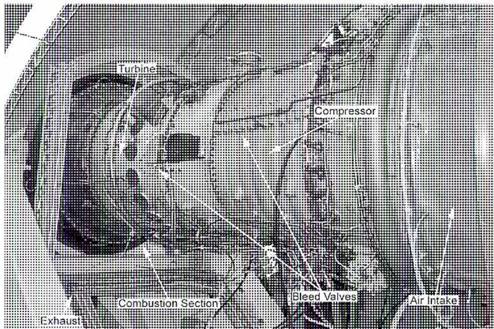
Figure 1
Rolls Royce RB211 Gas Turbine (26.1 MW)
(Courtesy of Tom Van Hardevelde)
In general, aero-derivative gas turbines are:
- • Suitable for locations such as offshore platforms, ships, trains, and vehicles where high power to weight ratio is critical
- • Easily maintained and can be removed and replaced quite quickly which maximizes on-line time and availability
- • Fast startup and loading capability, which is critical for backup power generation and certain process applications
- • Less durable than heavy-duty industrial type gas turbines and, under the same conditions, will usually have a shorter life span
- • High efficiency and power output
- • Able to use a variety of gaseous and liquid fuels and can be designed to operate on mixed fuels if required
Heavy Duty Gas Turbines
Heavy duty gas turbines have many of the same basic design features as steam turbines, compressors and axial and radial air and gas compressors. Since the overall equipment size and weight is not as much of an issue with industrial type gas turbines, the layout is more flexible and they will be designed using heavier and more rugged materials than aero-derivatives. An example of an industrial type gas turbine is the General Electric 6FA (107 MW) shown in Fig. 2.
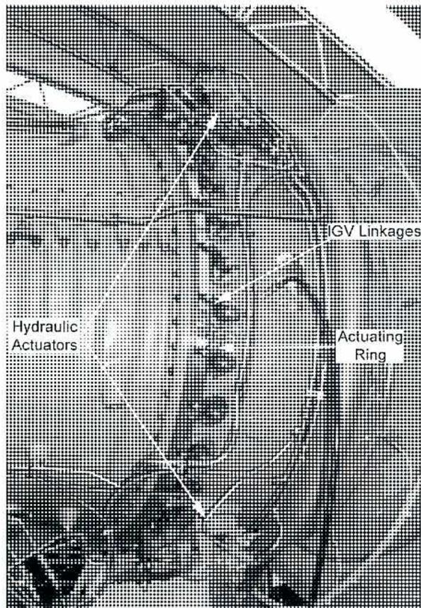
Figure 2
GE Frame 6FA Heavy-Duty Gas Turbine
(Courtesy of GE Power Systems)
Heavy-duty or industrial type gas turbines have the following general characteristics:
- • Physically larger, more rugged and heavier than aero-derivatives
- • More durable than aero-derivatives which allows long intervals between overhauls and gives a longer life cycle with increased on-line time
- • Very efficient with quick start-up and loading capabilities
- • Able to use a wide variety of gas and liquid fuels
- • Design and layout of compressor, combustors, turbine and load is more flexible than aero-derivatives
- • Potential for inter-cooling, regeneration, reheat and other custom options that increase cycle efficiency and allow for combined cycle and cogeneration operation
However, heavy-duty designs do vary, and some, such as those manufactured by Solar Turbines (4.57MW), are a hybrid of aero-derivative and heavy-duty gas turbines, as shown in Fig. 3.
![A detailed cutaway technical drawing of the Solar Centaur 50 Gas Turbine engine, showing its internal mechanical structure. Labels with leader lines point to various components: Air Inlet Assembly, Accessory Drive Assembly, Compressor Rotor Assembly, Compressor Case Assembly, Compressor Diffuser Assembly, Fuel Injector, Bleed Air Valve, Nozzle Case Assembly, Gas Fuel Manifold, Compressor Variable Vane Assemblies, Combustor Housing Assembly, Gas Generator Turbine Rotor Assembly, Power Turbine Rotor Assembly, Output Drive Shaft Assembly, Turbine Exhaust Diffuser, and Exhaust Collector.](440e59dae4772c0152116a3abd34331a_img.jpg)
Figure 3
Solar Centaur 50 Gas Turbine
(Courtesy of Solar Turbines)
SELECTION
The successful application of any engine depends on satisfying requirements related to desired performance, cost-effective operation, and expected engine life. This requires a thorough understanding of the designs available and engine rating systems, as well as knowledge of tradeoffs that might need to be made. A trade off may be, for example, a more robust turbine (higher cost) but with a longer engine life.
The selection of a gas turbine engine for a specific application depends on factors such as:
- • Performance ratings
- • Weight and size restrictions
- • Type of fuel available
- • Maintenance support resources
- • Life cycle costs
Performance Ratings
The performance rating and required range of power output are important factors to consider when choosing a specific gas turbine. Gas turbines operate most efficiently when running full loaded. Although they can operate down to 50% of full load rating, the lower operating ranges will cause the turbine output efficiency to drop substantially, down into the 30% to 40% range.
This makes it important to choose a gas turbine that operates at, or near, its maximum power capabilities. Smaller gas turbines are less efficient, although waste heat recovery or combined cycle applications can be very efficient. For short-term peak power applications, a gas turbine can sometimes be run at higher than rated power output, but this practice will reduce the life cycle of the turbine and cause an increase in maintenance and repair costs.
Weight and Size Restrictions
Weight and size restrictions usually favour gas turbines over other types of engines, such as reciprocating internal combustion engines, especially for higher power applications. Aero-derivative engines normally provide the lowest-weight solution.
Type of Fuel Available
The type of fuel available needs to be considered. The cleanest and most accessible fuel should be used. Pipeline quality natural gas is desirable because it delivers the most efficient, cost-effective, and environmentally acceptable solution. Lower quality gaseous fuels such as landfill or sewage gas require special handling and delivery systems and, due to their lower kJ values, will result in lower power output and turbine efficiencies. Liquid fuel, such as kerosene, provides reliable operation but may be unsuitable where emissions are an issue, or where fuel sources are not easily accessible. Lower grade liquid fuels may be cost-effective, but require fuel treatment and could result in higher maintenance costs.
Maintenance Support Resources
Maintenance has to be taken into consideration before a final selection is made. This includes the availability of skilled personnel, spare parts, and other support requirements.
Life Cycle Costs
Life cycle costs include not only the initial capital investment, but also fuel, operating, and maintenance costs. Simple cycle gas turbines are now efficient enough to compete with other types of engines on a cost basis. The use of gas turbines in combined cycle applications provides an efficient solution over the life cycle of the engine.
When selecting a gas turbine engine, it is important to consult with manufacturers on recommendations for proper application, engine rating, and equipment configuration.
Objective 2
Describe the principle and design of open and closed cycle gas turbine systems.
THE GAS TURBINE CYCLE
A knowledge of thermodynamic principles helps to understand the operation of gas turbines. Gas turbines can use one of two basic cycles — the open cycle or the closed cycle. This objective presents the simple versions of the open and closed cycle. A detailed description of the simple gas turbine cycle will be given here to allow the reader to grasp the key concepts and operating principles involved. Combined and cogeneration cycles will be covered further in the module.
The gas turbine thermodynamic cycle, called the Brayton cycle, is shown in Fig. 4. It consists of four steps:
- 1. The air is compressed, which increases the pressure and temperature and decreases the volume (from stage 1 to stage 2).
- 2. Heat is added, which results in a major increase in temperature and a small increase in volume, but almost no change in pressure (from stage 2 to stage 3).
- 3. Then, the air is expanded through the turbine and produces mechanical work. Pressure decreases to near atmospheric level. The temperature also decreases, although the air is still quite hot when it exits (from stage 3 to stage 4).
- 4. The air is cooled to ambient conditions and returns to its original volume and density (from stage 4 to stage 1).
Note: a significant part of the work of the turbine ( \( W_{33'} \) ) is used to run the compressor. The remaining energy extracted ( \( W_{3'4} \) ) is available to drive the load.
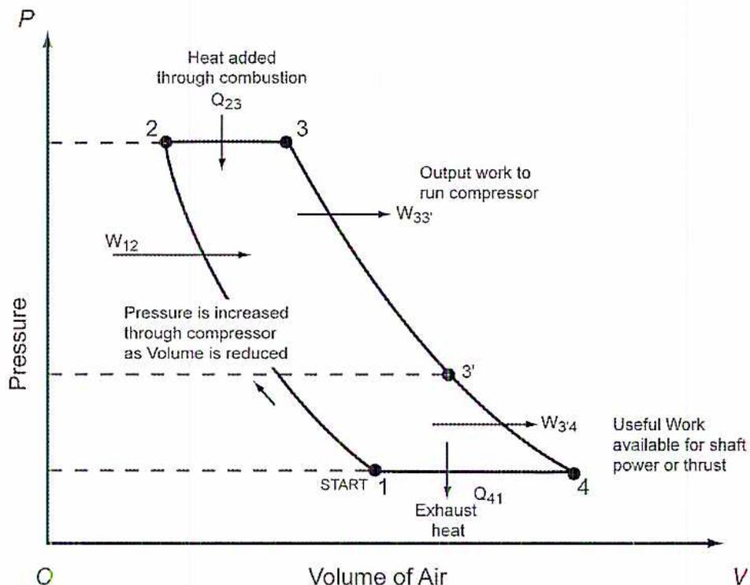
The diagram is a Pressure (P) versus Volume (V) plot. The vertical axis is labeled 'P' at the top and 'Pressure' along the side. The horizontal axis is labeled 'Volume of Air' and 'V' at the right. The cycle starts at point 'START 1' at the bottom left. A compression curve goes from point 1 to point 2, with an arrow labeled \( W_{12} \) pointing right. A horizontal line goes from point 2 to point 3, with a downward arrow labeled \( Q_{23} \) and the text 'Heat added through combustion'. An expansion curve goes from point 3 to point 4, with an arrow labeled \( W_{33'} \) pointing right. A horizontal line goes from point 4 back to point 1, with a downward arrow labeled \( Q_{41} \) and the text 'Exhaust heat'. A dashed horizontal line connects point 3' to point 1. Another dashed horizontal line connects point 2 to point 3'. A dashed curve connects point 1 to point 3'. Text labels include: 'Pressure is increased through compressor as Volume is reduced' (pointing to the compression curve), 'Output work to run compressor' (pointing to \( W_{33'} \) ), and 'Useful Work available for shaft power or thrust' (pointing to the area between the expansion curve and the dashed curve).
Figure 4
The Brayton Cycle
Open Cycle
Gas turbines almost always use the open cycle. Air is drawn from the atmosphere into the turbine, and then exhausted back to the atmosphere at the end of the cycle. Fuel is added to the air in the combustor section and combustion occurs inside the gas turbine.
An open cycle model of the Brayton cycle is shown in Fig. 5 and consists of four steps:
- 1. The air is compressed in a compressor (stage 1 to stage 2)
- 2. Fuel is added and combusted in a combustor (from stage 2 to stage 3).
- 3. The air expands, first through a turbine that runs the compressor, and then through a separate turbine that drives the load (from stage 3 to stage 4).
- 4. The air is exhausted to the atmosphere where it cools to ambient conditions and returns to its original volume and density (stage 4).
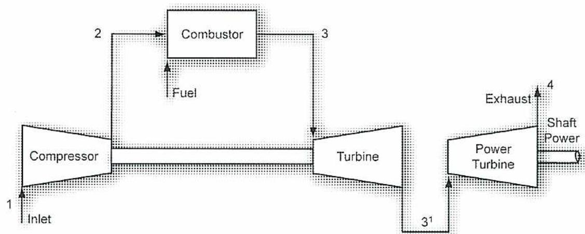
Figure 5
The Open Cycle Gas Turbine
Closed Cycle
The closed cycle is similar to the open cycle except that the working fluid (air) remains in the cycle instead of being exhausted to the atmosphere. This offers a number of thermodynamic advantages but at the expense of a more complicated configuration. This means that:
- • The fluid has to be heated by a heat exchanger that will have the combustion process separate from the cycle fluid
- • The fluid needs to be cooled after expanding through the turbine
Closed cycle systems are used less often than open cycle systems. Open cycle gas turbines are more efficient and combined cycle applications offer a better solution than closed cycle systems.
The simple closed cycle (Fig. 6) consists of the following steps:
- 1. The fluid is compressed in a compressor.
- 2. The fluid is heated in a heat exchanger. Since it passes through tubes which are surrounded by combustion gases, the fluid and the burning fuel do not come in direct contact with each other.
- 3. The fluid expands, first through a turbine that runs the compressor, and then through a separate turbine that drives the load.
- 4. The fluid is cooled in a heat exchanger before being compressed again.
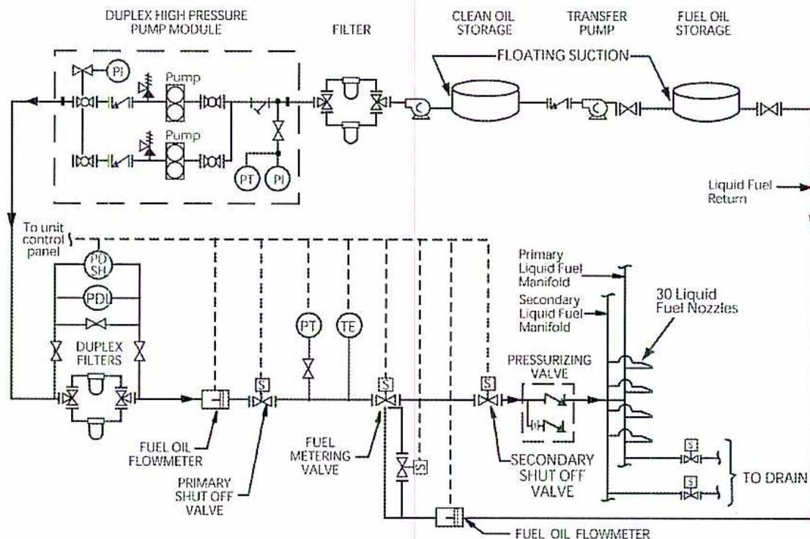
Figure 6
The Closed Cycle Gas Turbine
Advantages of the closed cycle are:
- • The working fluid pressure can be much higher than open cycle system pressure. Higher pressure means that the working fluid has a higher density. Therefore, a greater mass of the fluid expands through the turbine producing more power.
- • Combustion products do not mix with the working fluid. Thus, there is no fouling of turbine blades or heat exchanger surfaces, and therefore a wider variety of fuels can be used.
- • A working fluid with a greater heat transfer coefficient than air can be used, such as helium which has approximately twice the heat transfer coefficient of air. This reduces the amount of heating surface required in the heat exchangers.
Disadvantages of the closed cycle are:
- • The initial cost is higher than that of an open cycle system because of the heat exchangers (air cooler and air heater).
- • More space is required because the unit is larger due to the extra components.
- • A steady supply of cooling water is required.
Objective 3
Describe the principles and design of combined cycle and cogeneration systems using gas turbines.
INTRODUCTION
The exhaust gases from gas turbines contain a large amount of heat energy that is available for use to generate steam or to heat process fluids throughout the facility. Utilizing this waste energy can greatly increase the overall efficiency of the system and make the selection of a gas turbine much more advantageous to the engineer.
Exhaust temperatures can range from 400°C to 600°C. This heat can be partially recovered by a waste heat recovery system. Thermal efficiency can be increased from a simple cycle efficiency of 30%-40% to a total plant efficiency of 60%-70%. To avoid corrosion, the final temperature should not be reduced below the dew point.
A combined cycle uses the waste heat energy in the exhaust gases to provide additional steam generating capability for the facility. The combined cycle approach is ideal for use in large base load power generation applications that can exceed 1000 MW of total power. If the waste heat produces steam or hot water that is used for heating, cooling, or general steam applications, it is called a cogeneration or combined heat and power (CHP) system.
Combined Cycle Design
In a combined cycle design, the exhaust gases are routed to a Heat Recovery Steam Generator (HRSG) that supplies steam to a steam turbine. The steam turbine can be used to drive a separate generator (Fig. 7) or, in some cases, it can be attached directly to the same generator as the gas turbine (Fig. 8).
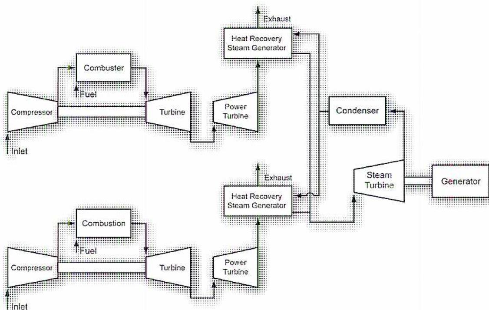
This schematic diagram illustrates a dual-shaft gas turbine system. The system consists of two identical gas turbine units. Each unit includes an inlet, a compressor, a combustor (labeled 'Combuster' in the top unit and 'Combustion' in the bottom unit) with a fuel input, a turbine, and a power turbine. The exhaust from each power turbine is directed to a separate Heat Recovery Steam Generator (HRSG). Both HRSGs have their own exhaust stacks. The steam generated in both HRSGs is fed into a single, common steam turbine. This steam turbine is connected to a generator. The exhaust from the steam turbine is then directed to a condenser. The condenser is connected to both HRSGs, indicating a shared cooling system.
Figure 7
Separate Generators with Common Steam Turbine
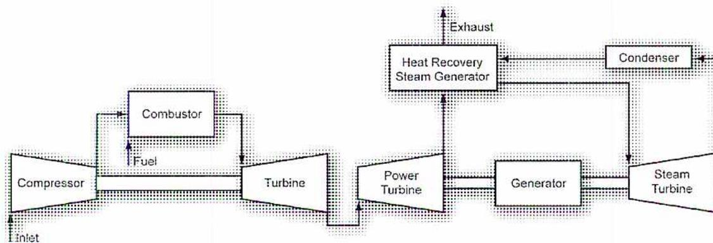
This schematic diagram shows a gas turbine system where a single generator is shared between a power turbine and a steam turbine. The gas turbine section includes an inlet, a compressor, a combustor (labeled 'Combustor'), and a turbine with a fuel input. The turbine is connected to a power turbine, which is in turn connected to a generator. The exhaust from the power turbine is directed to a Heat Recovery Steam Generator (HRSG), which has its own exhaust stack. The steam generated in the HRSG is fed into a steam turbine. This steam turbine is connected to the same generator as the power turbine, meaning they all share a common shaft. The exhaust from the steam turbine is directed to a condenser, which is also connected to the HRSG.
Figure 8
Single Generator with Steam Turbine on Common Shaft
The HRSG may be unfired (no extra heat is added), or it may be fired. In the fired type, an additional burner, or multiples of burners, will be installed in the ducting just upstream of the HRSG to increase the temperature of the exhaust gases.
The advantages of the fired system are that it:
- • Compensates for changes in gas turbine output to give constant steam production
- • Can be used when the turbine is at low loads or not on at all to generate steam for the facility
Early combined cycle installations used a single-pressure HRSG. Now HRSGs often use a double-pressure or triple-pressure configuration, such as the one shown in Fig. 9. This extracts the greatest amount of heat and results in a more efficient operation. The choice of HRSG depends on the temperature of the exhaust. A triple-pressure HRSG is the best option for gas turbines with a high firing temperature (above 550°C).
![A detailed 3D cutaway diagram of a triple-pressure Heat Recovery Steam Generator (HRSG). The diagram shows the flow of exhaust gas from left to right through three distinct pressure sections: a Superheater Section, an Evaporator Section, and an Economizer Section. On the left, two 'Inlet Ducts' lead into the Superheater Section, which is supported by 'Integral Structural Steel'. Above the Superheater is a 'Steam Drum' connected by a series of pipes. The gas then flows into the 'Evaporator Section', which contains a 'Manway' and 'Downcomer' pipes. Finally, the gas passes through the 'Economizer Section' and exits via an 'Outlet Duct' into a 'Stack'. 'Expansion Joints' are shown at the inlet and between the sections. The entire unit is covered in 'Internal Insulation and Lagging'.](0e240e8e4783e664047fbdb5fbd0989f_img.jpg)
Figure 9
Triple-pressure HRSG
(Courtesy of GE Power Systems)
Cogeneration Design
Cogeneration designs are used in distributed power applications. An example is shown in Fig. 10. The two gas turbines (GT) each produce 1 550kW of electrical power. Their exhaust is fed to a common HRSG, which has supplementary firing, so that the amount of steam can be varied. Each engine has a diverter valve in case steam is not required.
![Schematic diagram of a cogeneration exhaust and steam system. Two gas turbines, labeled GTA and GTB, are shown on the left. Each turbine has an exhaust duct leading to a silencer. The exhaust from the silencers is directed into a common 'Transition' duct. This duct leads to a 'Perforated Plate'. Above the plate, the exhaust is split into two circular components labeled 'Left Steam Drum' and 'Right Steam Drum'. From each steam drum, a pipe leads to a vertical 'Economizer' unit. Arrows indicate the flow of exhaust gas from the turbines, through the silencers, transition, and into the steam drums and economizers. Another arrow indicates the final exhaust flow out of the top of the economizers.](fa859e4e468bfb2710a94527f2c504af_img.jpg)
Figure 10
Cogeneration Exhaust and Steam System
Objective 4
Describe the principles and design of gas turbine regeneration, intercooling, and reheating.
CYCLE IMPROVEMENTS
Three approaches — regeneration, intercooling, reheat — can be used to improve the efficiency of the basic gas turbine cycle. For various compatibility reasons, these are normally used independently and, at the moment, no gas turbine exists that uses all three methods. Aero-derivative engines are designed to be as light as possible to allow them to function efficiently as airplane engines. Therefore, they will not have the extra equipment included with them to allow for cycle improvements like industrial type turbines do. As simple cycle gas turbines are becoming more efficient, these cycle improvements are becoming less necessary. Furthermore, combined cycle designs, which use waste heat for other purposes, are becoming more prevalent.
Regeneration
The most common cycle improvement was the regenerative cycle, or regeneration. A heat exchanger installed in the exhaust preheats the air between the compressor and the combustors, as shown in Fig. 11. Thus, exhaust heat is used to increase the temperature of the compressed air prior to combustion. This approach was quite common since it improved the efficiency of the gas turbine by 15% to 20%.
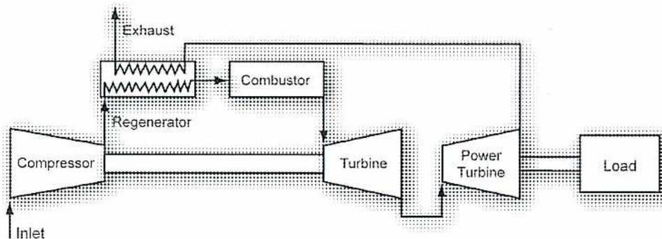
The diagram illustrates a gas turbine cycle with regeneration. Air enters the system through an 'Inlet' at the bottom left and is compressed by a 'Compressor'. The compressed air then passes through a 'Regenerator', which is represented by a box containing a zigzag heat exchanger symbol. From the regenerator, the air flows into a 'Combustor'. The high-temperature gas from the combustor expands through a 'Turbine'. The turbine is mechanically coupled to a 'Power Turbine', which in turn is connected to a 'Load'. The exhaust from the power turbine is directed back into the 'Regenerator' to preheat the incoming compressed air. Finally, the air exits the system through an 'Exhaust' at the top left.
Figure 11
Regeneration
Disadvantages of regeneration include increased capital costs and pressure losses due to the high pressure ratio compressors. Instead of regeneration, many installations use the exhaust heat for combined cycle or cogeneration applications.
Intercooling
In some gas turbines, inlet air is compressed in two stages using a dual shaft arrangement. The air is cooled between the stages in a heat exchanger, or intercooler (Fig. 12). Since isothermal compression (compression without an increase in air temperature) takes less work than adiabatic compression (compression without removing heat which increases the air temperature), more turbine power is available for the output load. Another advantage of intercooling is that the total mass of air that needs to be circulated through the cycle per kW of energy produced is reduced.
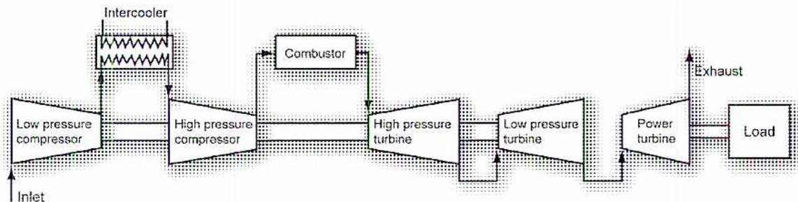
The diagram illustrates a gas turbine cycle with intercooling. Air enters the system through an 'Inlet' and is first compressed by a 'Low pressure compressor'. It then passes through an 'Intercooler', represented by a heat exchanger symbol, where it is cooled. The air is then compressed further by a 'High pressure compressor'. The compressed air enters a 'Combustor', where fuel is added and combustion occurs. The high-temperature gas then expands through a 'High pressure turbine', which is mechanically coupled to the 'Low pressure compressor'. The gas then expands further through a 'Low pressure turbine', which is coupled to a 'Power turbine'. The 'Power turbine' is connected to a 'Load', producing the final output. The gas finally exits through an 'Exhaust'.
Figure 12
Intercooling
However, the beneficial effects of intercooling decrease as the pressure ratio increases. A high pressure ratio means that losses through the intercooler become significant. Using an intercooler makes more sense when combined with regeneration because more exhaust heat can be recovered. This improves the overall cycle efficiency.
Intercoolers are shell and tube heat exchangers similar in construction to regenerators. Cooling water passes through the tubes while air passes on the shell side. In some cases, air passes through tubes surrounded by water. The General Electric LM6000 has an innovative intercooling option, shown in Fig. 13, which introduces an atomized water spray between the low pressure and high pressure compressors. This provides a 9% power boost at 15°C and 20% at 32°C, without requiring a separate heat exchanger. A second water spray is injected into the air intake to reduce the temperature, and thus increase the power output.
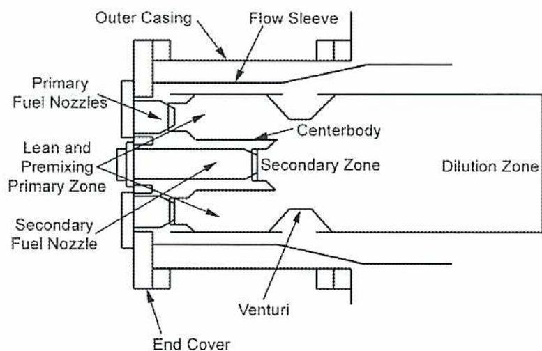
Figure 13
Intercooling Using Water Spray
(Courtesy of GE Power Systems)
Reheat
Reheat cycles are fairly rare, but some gas turbines still use them. The hot gas is expanded in two stages and reheated between stages. After leaving the first set of combustion chambers, the gas is expanded through a high pressure turbine. Then, it passes through a second set of combustion chambers before entering a low pressure turbine where it is expanded a second time (see Fig. 14). The second set of combustion chambers uses the excess oxygen content of the gas exiting the high pressure turbine for combustion.
Reheating increases the energy content of the gas and improves the thermal efficiency of the cycle. As a result, less air has to be compressed in order to do the same amount of work.
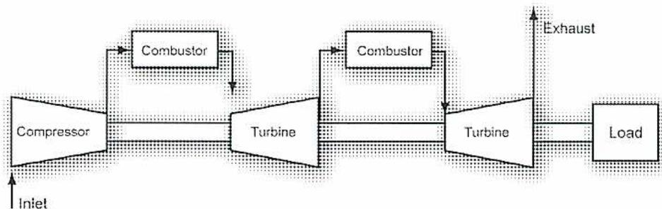
Figure 14
Reheat
Objective 5
Describe the principles and design of gas turbine shaft arrangements.
SHAFT ARRANGEMENTS
Gas turbines are designed with a number of different shaft arrangements including:
- • Single shaft
- • Dual shaft
- • Multi-shaft arrangements
Single Shaft
In the single shaft arrangement, the compressor, turbine, and load are connected and rotate at the same speed (see Fig. 15). This arrangement is used for power generation where a constant speed is required, but is rarely used for other applications because the power output is not flexible. Mechanically, it is simpler than a two-shaft arrangement, but requires a larger starting motor because it must also rotate the generator (load) up to ignition speed. The hot end drive arrangement, Fig. 15(a), is more common than the cold end drive that is shown in Fig. 15(b).
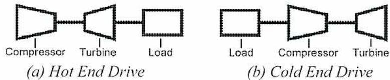
The diagram illustrates two single-shaft gas turbine configurations. In (a) Hot End Drive, the components are connected in series: a trapezoidal Compressor, a trapezoidal Turbine, and a rectangular Load. In (b) Cold End Drive, the components are connected in series: a rectangular Load, a trapezoidal Compressor, and a trapezoidal Turbine. Both diagrams show a single continuous shaft connecting all three components.
Figure 15
Shaft Layouts – Single Shaft
The General Electric 6001, shown in Fig. 16, is an example of a hot end drive (the load is connected to the turbine).
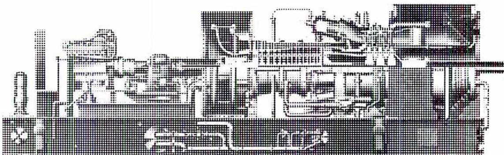
A black and white photograph showing a large industrial gas turbine unit. The unit is mounted on a base and features various components including a compressor at the front, a combustion chamber in the middle, and a turbine section at the rear. The GE monogram is visible on the side of the casing.
Figure 16
General Electric 6001 –Single Shaft Gas Turbine with Hot End Drive
(Courtesy of GE Power Systems)
The Alstom Typhoon, shown in Fig. 17, is an example of a cold end drive arrangement.
| Typhoon (ISO) 4.85MW e | PRESSURE | BAR | 14.7 | 13.6 | 12.6 | 11.7 |
| TEMPERATURE | °C | 35 | 37 | 39 | 41 | |
| Typhoon (ISO) 4.70MW e | PRESSURE | BAR | 14.7 | 13.6 | 12.6 | 11.7 |
| TEMPERATURE | °C | 35 | 37 | 39 | 41 | |
| Typhoon (ISO) 5.05MW e | PRESSURE | BAR | 14.7 | 13.6 | 12.6 | 11.7 |
| TEMPERATURE | °C | 35 | 37 | 39 | 41 | |
| Typhoon (ISO) 5.25MW e | PRESSURE | BAR | 14.7 | 13.6 | 12.6 | 11.7 |
| TEMPERATURE | °C | 35 | 37 | 39 | 41 |
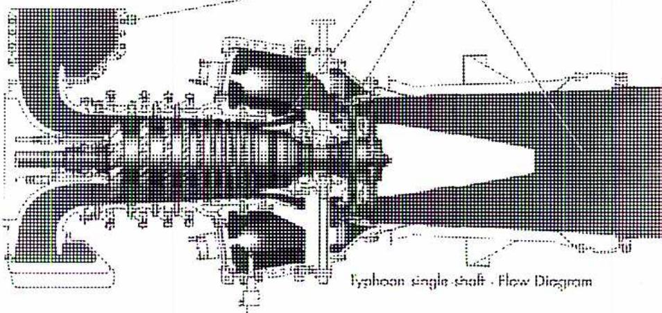
A schematic flow diagram of the Alstom Typhoon gas turbine. It shows the air intake, compressor, combustion chamber, turbine, and exhaust. The turbine is connected to a generator at the cold end (rear). The diagram is labeled 'Typhoon single shaft - Flow Diagram'.
Figure 17
Alstom Typhoon – Single Shaft Gas Turbine with Cold End Drive
(Courtesy of Alstom)
Dual Shaft
The dual shaft (twin-shaft) arrangement, shown in Fig. 18, is the most common design. The compressor and turbine are connected by a shaft, but the power turbine (also called the free turbine) is coupled on a second shaft with the load. This layout provides more operational flexibility with respect to speed and load, especially for compressors.
Many gas turbines use dual shaft designs with the load coupled to the gas turbine (hot end) such those shown in Fig. 18 (a) and Fig. 19.
A cold end drive (the load is coupled to the compressor) positions the power turbine and load shaft inside the compressor turbine shaft as shown in Fig. 18 (b). This arrangement is much less common, although it does exist.
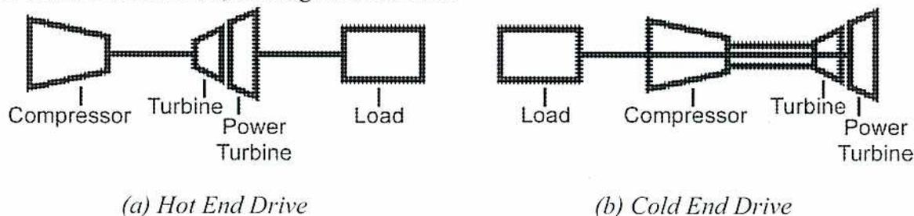
Figure 18 consists of two schematic diagrams labeled (a) and (b). Diagram (a), titled 'Hot End Drive', shows a linear arrangement of four components: a Compressor, a Turbine, a Power Turbine, and a Load. The Compressor is connected to the Turbine, which is connected to the Power Turbine, which is in turn connected to the Load. Diagram (b), titled 'Cold End Drive', shows a similar linear arrangement but with a different configuration: a Load, a Compressor, a Turbine, and a Power Turbine. In this case, the Load is connected to the Compressor, which is connected to the Turbine, which is connected to the Power Turbine.
Figure 18
Shaft Layouts – Dual Shaft
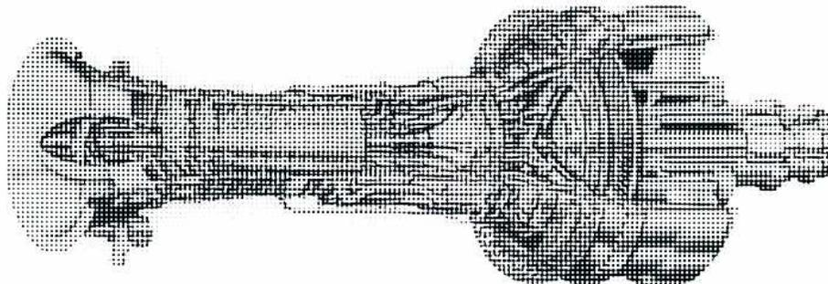
Figure 19 is a detailed cutaway illustration of a General Electric LM2500 gas turbine engine. It shows the internal mechanical structure, including the multi-stage axial compressor, the combustion chamber, the gas turbine section, and the power turbine section. The engine is mounted on a base, and various external components like the exhaust duct and intake are visible.
Figure 19
General Electric LM2500 – Dual Shaft Gas Turbine with Hot End Drive
(Courtesy of GE Power Systems)
Multi-Shaft
Fig. 20 (a) shows a fairly common aero-derivative design that uses a two-shaft arrangement for the engine, and a third shaft for the power turbine. The low-pressure compressor and turbine are connected by a shaft fitted inside the hollow shaft connecting the high-pressure compressor and turbine. Mechanically, this design is more complicated (especially for the bearings), but offers greater efficiency and operational flexibility.
An even more complicated layout positions the load at the cold end, which requires three shafts on the same centerline, as shown in Fig. 20 (b).
![Figure 20: Shaft Layouts – Triple Shaft. (a) Hot End Drive: A schematic showing a High Pressure Compressor and Low Pressure Compressor on the left, connected to a High Pressure Turbine and Low Pressure Turbine. The High Pressure Turbine is connected to a Load, and the Low Pressure Turbine is connected to a Power Turbine. (b) Cold End Drive: A schematic showing a High Pressure Compressor and Low Pressure Compressor on the right, connected to a High Pressure Turbine and Low Pressure Turbine. The High Pressure Turbine is connected to a Load, and the Low Pressure Turbine is connected to a Power Turbine.](73b5cce955ba9415a98791db7b0080ad_img.jpg)
(a) Hot End Drive
(b) Cold End Drive
Figure 20
Shaft Layouts – Triple Shaft
An example of this design, the Rolls Royce RB211 shown in Fig. 21; is widely used for both power generation and mechanical drive applications, such as compressors.
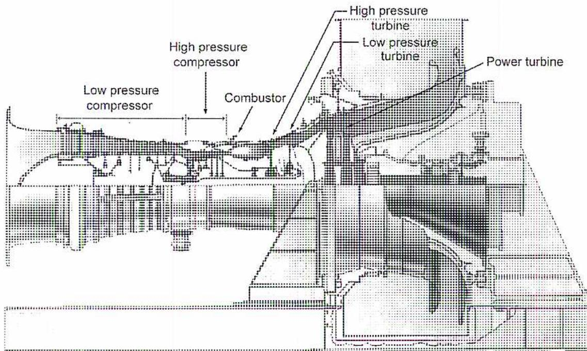
Figure 21
Rolls Royce RB211 – Triple Shaft Gas Turbine with Hot End Drive
(Courtesy of Rolls Royce)
The General Electric LM6000, shown in Fig. 22, uses a unique design. It is similar to the triple shaft arrangement shown above, but the load is directly connected to either the low-pressure compressor, or the low-pressure turbine.
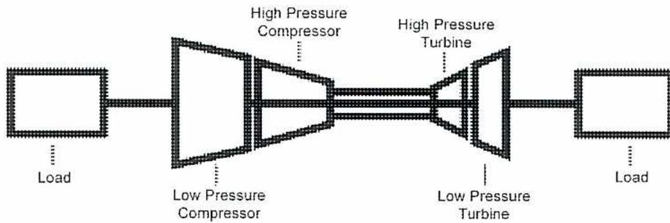
A schematic diagram of a gas turbine engine layout. It shows a central engine core with a High Pressure Compressor and a High Pressure Turbine. A shaft connects the High Pressure Turbine to a Low Pressure Turbine. The Low Pressure Turbine is connected to a Load. Another shaft connects the High Pressure Compressor to a Low Pressure Compressor, which is also connected to a Load.
Figure 22
Shaft Layouts – Direct Dual Shaft
This engine, with optional cold end or hot end drive, is used exclusively for power generation and is shown in Fig. 23.
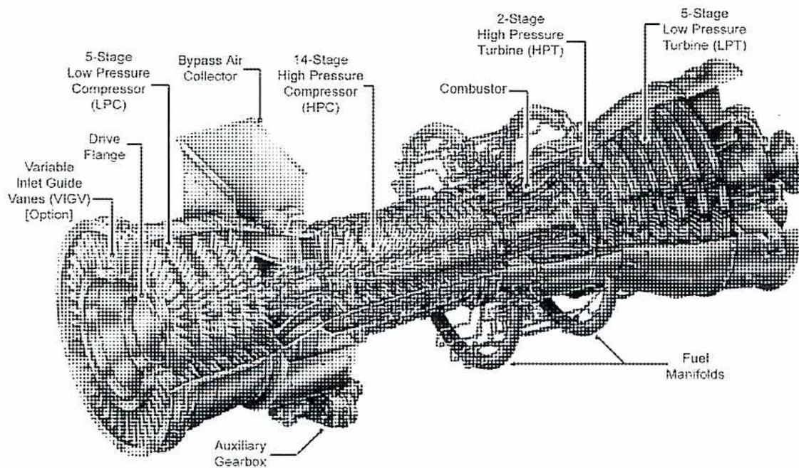
A detailed cutaway diagram of the General Electric LM6000 Dual Shaft Gas Turbine. The diagram shows the internal components of the engine, including the 14-Stage High Pressure Compressor (HPC), the 5-Stage Low Pressure Compressor (LPC), the Combustor, the 2-Stage High Pressure Turbine (HPT), and the 5-Stage Low Pressure Turbine (LPT). Other labeled parts include the Variable Inlet Guide Vanes (VIGV) [Option], Bypass Air Collector, Drive Flange, Fuel Manifolds, and Auxiliary Gearbox.
Figure 23
General Electric LM6000 –Dual Shaft Gas Turbine
(Courtesy of GE Power Systems)
Objective 6
Describe the design and components of gas turbine compressors, combustors (combustion chambers) and turbines.
COMPRESSOR DESIGN
Highly efficient and effective compressors are essential for efficient gas turbine operation. Two types of compressors are used: axial and centrifugal (or radial). Small gas turbines often use centrifugal compressors, sometimes in combination with several axial stages. Large gas turbines almost always use multi-stage axial compressors.
To increase compressor efficiency, especially at lower speeds, multi-shaft arrangements may be used so that the initial stages can operate at lower speeds than the later stages.
Compressor designs often use a combination of inlet guide vanes (IGV's), variable stator vanes (VSV's), and bleed valves to counteract the effects of surge, which happens at lower speeds. This is described later in this module.
Axial Compressors
Axial compressors are similar to propellers; the air moves parallel to the axis of rotation. Since the mass flow through the compressor is constant, the area must decrease from the inlet to the outlet of the compressor. This means that the blades are largest in the first stage, and then get progressively smaller.
An axial compressor has multiple stages. An initial row of stationary blades, called the inlet guide vanes, is used to direct the air (at the correct angle) into the first stage of rotor blades. In each stage, a row of moving blades (rotors) is followed by a row of stationary blades (stators). Each stage has a small compression ratio, usually between 1.1:1 and 1.4:1. A compression ratio of between 10:1 and 40:1 can be achieved by all stages in combination.
Due to the diverging shape of the rotating and stationary blades in an axial compressor, the pressure of the fluid is increased across both sections of blades. Each row of rotor blades increases the velocity and the pressure of the air. The subsequent row of stator blades act as a diffuser which further increases pressure and decreases velocity.
The axial compressor rotor blade, shown in Fig. 24, shows the slender shape compressor blades need to maximize efficiency. Notice the twist in the blade which produces the optimum aerodynamic angle when the air enters into each compressor stage. The angle
increases with the radius because velocity is higher at the tip of the blade than at the root.
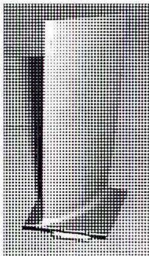
Figure 24
Rolls Royce RB211 Gas Turbine
(Courtesy of Tom Van Hardevelde)
A cross-section of the axial compressor from a General Electric LM2500 is shown in Fig. 25. Note that the cooling flow from the 9th stage of the compressor is fed back through the intake strut to cool and pressurize the inside of the shaft, and the front, centre, and rear bearings. A bleed valve, coming off the 13 th stage, cools the high pressure turbine nozzles.
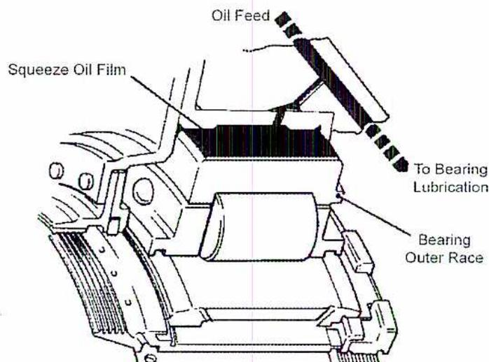
Figure 25
General Electric LM2500 Gas Turbine
(Courtesy of GE Power Systems)
Centrifugal Compressors
Centrifugal compressors were initially widely used in gas turbines because they were more efficient and rugged than axial compressors. They are similar in basic design to the centrifugal compressors used throughout the various processes to compress fluids like air and natural gas vapours. Centrifugal compressors can achieve a higher per stage compression ratio, up to 9:1, than axial compressors.
A centrifugal compressor uses an impeller to accelerate the air and partially increase the pressure. A diffuser, which follows the impeller, further increases the pressure. Multiple impellers may be used (sometimes designed back-to-back), or they may be combined with several axial stages.
The Kawasaki M1A-13A gas turbine, shown in Fig. 26, has two centrifugal compressors mounted on a single shaft with the turbine and a gearbox connected to a generator.
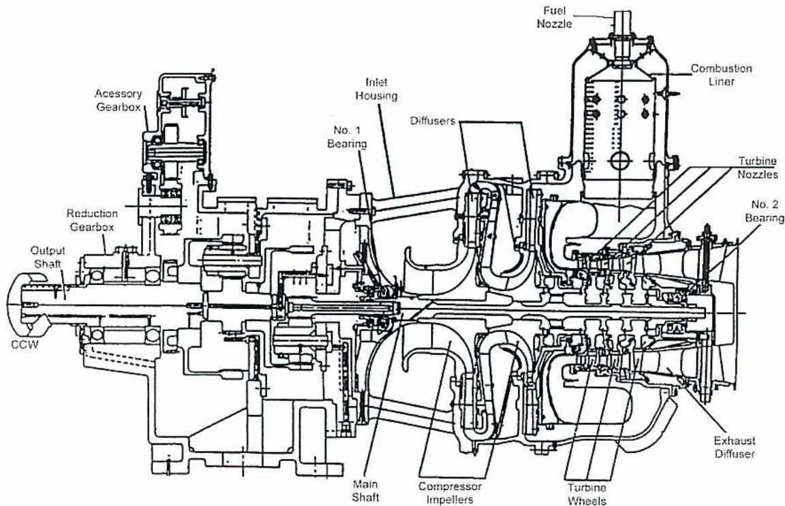
A detailed cross-sectional diagram of the Kawasaki M1A-13A gas turbine. The diagram shows the internal components and airflow path. On the left, an 'Accessory Gearbox' is connected to an 'Output Shaft' which rotates counter-clockwise ('CCW'). A 'Reduction Gearbox' is also shown on the output shaft. The main engine section includes an 'Inlet Housing' leading to 'Compressor Impellers' and 'Diffusers'. The first compressor stage is supported by 'No. 1 Bearing'. The compressed air then enters the 'Combustion Liner' via a 'Fuel Nozzle'. The high-temperature gas expands through 'Turbine Nozzles' and 'Turbine Wheels', which are connected to the main shaft. The turbine section is supported by 'No. 2 Bearing'. Finally, the gas passes through an 'Exhaust Diffuser'. The 'Main Shaft' connects the turbine wheels to the reduction gearbox.
Figure 26
Kawasaki M1A-13A Gas Turbine
Compressor Surge
At lower speeds, since the blades are not at the optimum angle, air flow separation can occur. This is similar to an aircraft wing stalling or losing lift. When starting a gas turbine, the pressure rise is very low, and the compressor is trying to push the air into a much smaller area, designed for a larger compression ratio, at the back of the compressor. This can cause the air to choke. The result is called surge or rotating stall. It is a very complicated aerodynamic phenomenon that is not fully understood.
However, the methods required to counteract it are well developed. Two basic options used for countering surge are bleed valves and variable compressor geometry , but surge can still occur if the blades become dirty or fouled.
Bleed Valves
A bleed valve reduces the likelihood of surge by dumping air to increase air flow through the compressor during startup. When the blades reach a predetermined speed, the valve closes. The Rolls Royce RB211 Gas Turbine, shown in Fig. 1, has one bleed valve at the exit of the first compressor rotor, and one at exit of the second compressor rotor, which activate at different speeds.
The Solar Centaur 50 Gas Turbine, shown in Fig.3, has one bleed valve at the end of the compressor which feeds into the exhaust. Sometimes, multiple bleed valves are used.
Variable Compressor Geometry
Variable compressor geometry is used on many gas turbines to improve efficiency at part load and reduce the likelihood of surge during startup. One or more stages of stator vanes, either inlet guide vanes (IGVs) or variable stator vanes (VSVs), are rotated to optimize the airflow through the compressor according to the operating conditions — speed and temperature.
Most gas turbines have variable IGVs, such as the ones shown in Fig. 27. They are held in place by a ring around the outside of the compressor stage and actuated by hydraulics (see Fig. 28). During startup, the blades rotate to a closed position and restrict the flow of air. At a specified speed, they begin to open until they reach a predetermined angle.
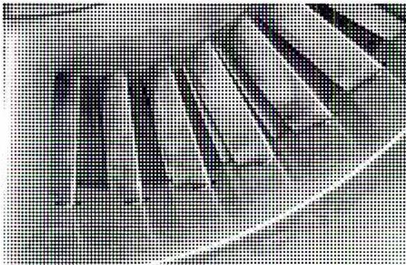
Figure 27
Rolls Royce RB211 Gas Turbine Inlet Guide Vanes
(Courtesy of Tom Van Hardevelde)
Figure 28
Rolls Royce RB211 Gas Turbine Inlet Guide Vane Linkage
(Courtesy of Tom Van Hardevelde)
Some engines use multiple stages of VSVs downstream of the IGV. The Solar Centaur 50 Gas Turbine, in Fig. 3, has three additional VSVs in addition to the IGV. They actuate from closed to the open position between 80% and 92.5% speed.
The General Electric LM2500, shown in Fig. 29, uses an IGV plus a very extensive set of VSVs on seven stages. Hence, it does not require bleed valves.
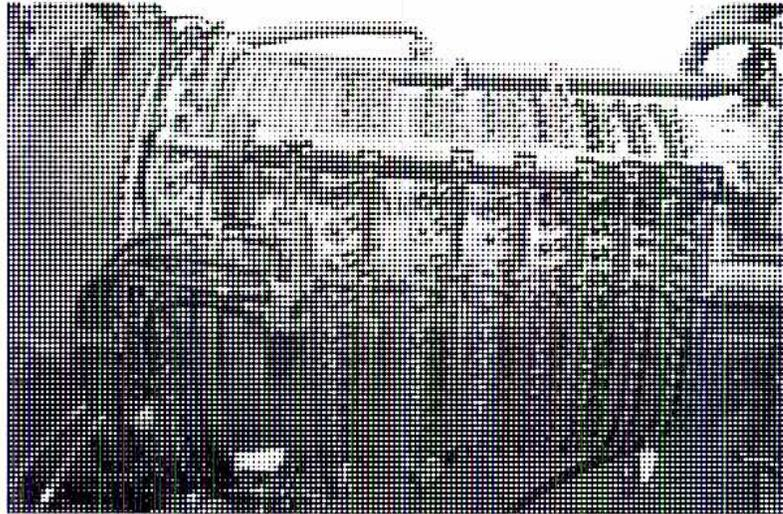
Figure 29
General Electric LM2500 Gas Turbine IGV/VSV Linkage
(Courtesy of Tom Van Hardevel)
Compressor Blade Materials
Compressor blades operate at low or moderately high temperatures but are subject to high rotational stresses. Stator vanes and blades are often made from stainless or high alloy steel, or sometimes from titanium. They need to resist corrosion and erosion from external contaminants. Coatings are applied to increase compressor efficiency and reduce corrosion.
COMBUSTOR DESIGN
Combustors are designed to burn a wide variety of fuels — from natural gas to liquids, or even low energy gases. Some engines can use both natural gas and liquid fuel and switch from one to the other during operation. These systems require special fuel nozzles and more complicated fuel gas and control systems.
The combustion section must be able to burn a variety of fuels efficiently with low emissions, high reliability, and long life. Each fuel has an optimum set of combustion characteristics that must be met to give complete and efficient chemical reactions between the reactive elements in the fuel and oxygen in the air. The atmosphere in the combustor is very aggressive with combustion temperatures ranging from 900°C to 1850°C. The presence of oxides of sulphur and nitrogen creates a high potential for corrosion and erosion of the internal components. This requires the use of exotic alloys, ceramic coatings and sleeve cooling mechanisms to handle these conditions.
The temperature of combustion can reach 1850°C, but the temperature limit of most metals is closer to 1200°C. As a result, only about 20% of the air that flows through the combustion section is directly involved in combustion. The remaining 80%, called secondary air, is used to cool the combustion liner and dilute the air leaving the combustor to reduce its temperature before it reaches the turbine section.
Since combustion can only be sustained at fairly low velocities, combustion air is diffused at the inlet of the combustion section. This also helps increase air pressure. A vortex is maintained downstream from the fuel nozzles to provide the required velocity for sustained combustion. Then, the two air streams (combustion and secondary air) are mixed before leaving the combustor. This process is shown in Fig. 30. This is an example of a straight-through combustor design commonly used on aero-derivative engines because it minimizes the frontal area to reduce drag.
![Figure 30: Air Flow in a Straight-Through Combustor. The diagram consists of two parts: a longitudinal cross-section (top) and a transverse cross-section (bottom). The longitudinal section shows air entering from the left, with 80% being diffused (50% to the top wall, 30% to the bottom wall). 20% of the air enters the PRIMARY ZONE. In this zone, 12% is used for combustion and 8% is used for cooling. The remaining 40% of the total air is used for COOLING in the DILUTION ZONE. Finally, 20% of the air is used for DILUTION before exiting. The transverse section shows the internal structure, including fuel nozzles, a vortex region, and the mixing of air streams.](a738993919a50143787084ee7ce6e2f2_img.jpg)
Figure 30
Air Flow in a Straight-Through Combustor
(Courtesy of Rolls Royce)
Many heavy-duty gas turbines use a reverse flow combustor, as shown in Fig. 31, to make the combustors more accessible. On startup, an igniter provides an electric spark to start the combustion process. Once started, combustion is self-sustaining. If the gas turbine has several combustors, more than one igniter may be installed. A crossfire tube, shown in Fig. 31, is used to ignite the other combustors and distribute the pressure evenly between combustors.
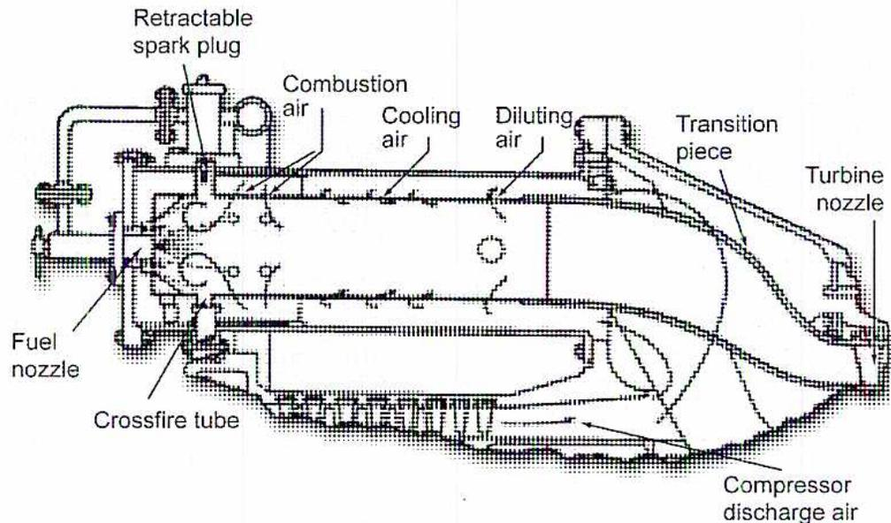
A detailed cross-sectional diagram of a reverse-flow combustor. The diagram shows the internal components and the path of the gas flow. On the left, a 'Retractable spark plug' is positioned at the top. Below it, a 'Fuel nozzle' enters the combustion chamber. A 'Crossfire tube' is shown at the bottom left, connecting to the main chamber. The chamber itself is divided into sections for 'Combustion air', 'Cooling air', and 'Diluting air'. The flow of gas is indicated by arrows, moving from left to right through the combustion section, then reversing direction to flow from right to left through the turbine section. The turbine section contains a 'Transition piece' and a 'Turbine nozzle'. Finally, the gas exits as 'Compressor discharge air' at the bottom right.
Figure 31
Air Flow through a Reverse-Flow Combustor
(Courtesy of GE Power Systems)
Types of Combustors
There are three basic combustor designs:
- • Single-can (external)
- • Annular
- • Can-annular (turbo-annular)
Single-Can (External)
The single-can (Fig. 32) or external design combustor, often used on heavy-duty gas turbines, is usually reverse-flow combustors. Fig. 16 and Fig. 17 show gas turbines with external combustors.
Some gas turbines have only one, or sometimes two, main combustors (usually the reverse-flow type) mounted vertically above the turbine. This design can be seen in small gas turbines, such as the Kawasaki M1A-13A shown in Fig. 26.
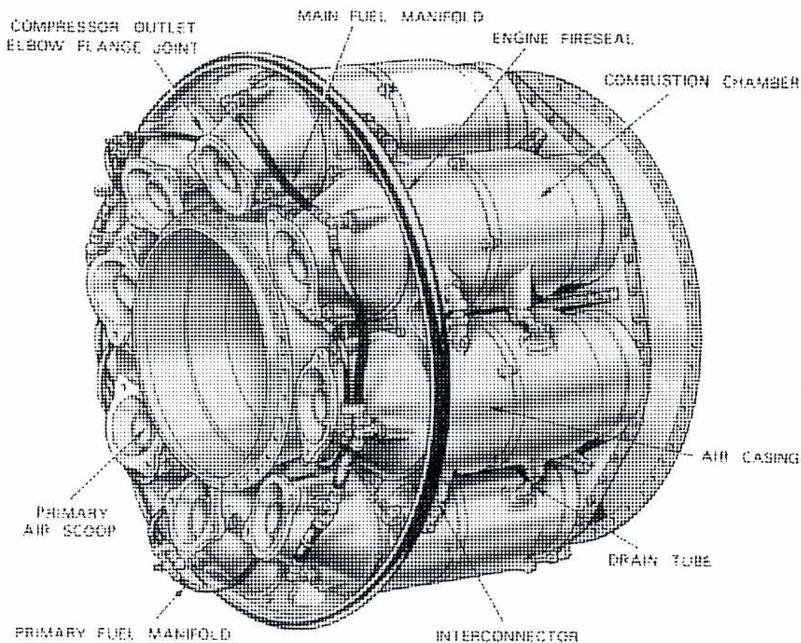
Figure 32
Single Can (External) Gas Turbine Combustor
Annular
The annular combustor (Fig. 33), a more modern concept, consists of a singular flame tube in an annular shape. It is smaller in size than the can burner and does not have the problem of combustion propagation between chambers. Combustion takes place in a single combustion liner, with an inner and outer casing, that encircles the centerline of the gas turbine. Fuel nozzles are evenly spaced around the ring. This is a very simple design that minimizes the complexity of the combustion and dilution air flows.
![A detailed cross-sectional diagram of an annular combustor. The diagram shows a central combustion chamber with an inner casing and an outer casing. At the top, a flame tube is shown. On the left, H.P. Compressor Outlet Guide Vanes lead into the combustor. At the bottom left, a fuel manifold feeds into fuel spray nozzles. The combustor casing has dilution air holes. On the right, turbine nozzle guide vanes are positioned. The entire assembly is mounted on a compressor casing mounting flange at the bottom left and a turbine casing mounting flange at the bottom right.](e7cb11f042fc58088dff4b6d9306845e_img.jpg)
Figure 33
Annular Combustor
Fig. 34 shows the combustion and turbine sections of the General Electric LM2500. This engine uses an annular combustor design. Compressor air flows around the combustor to cool the liner and then the turbine discs downstream.
At the top is an optional design for dry low NO x emission (discussed in Objective 10). This requires a different and larger combustor design with more fuel nozzles to reduce emissions.
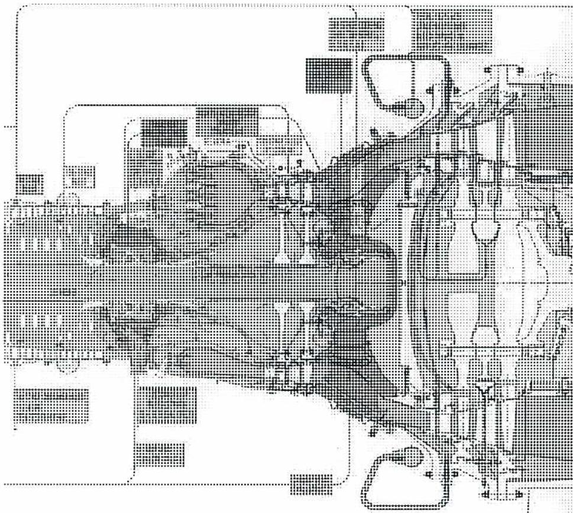
Figure 34
General Electric LM2500 Engine
(Courtesy of GE Power Systems)
Can-Annular (Turbo-annular)
In the can-annular or turbo-annular design combustor (Fig. 35), combustion takes place in multiple combustors (also called combustion cans) placed around the centerline of the gas turbine. Some aero-derivative gas turbines use this straight-through combustor design since it minimizes the front area of the turbine.
![A detailed cutaway diagram of a can-annular combustor. The diagram shows the internal components of the combustion chamber. Labels with leader lines point to various parts: 'Outer Air Casing' (the outermost shell), 'Dilution Air Holes' (small holes in the casing), 'Turbine Mounting Flange' (at the top rear), 'Inner Air Casing' (the inner shell), 'Nozzle Guide Vanes' (curved blades at the exit), 'Flame Tube' (the central combustion area), 'Interconnector' (between flame tubes), 'Igniter Plug' (on the bottom), 'Diffuser Case' (the bottom section), 'Primary Air Scoop' (at the bottom inlet), and 'Swirl Vanes' (at the inlet).](d5a837fa4f4675e5ee596003cf55985c_img.jpg)
Figure 35
Can-Annular Combustor
Combustor Liner Materials
Combustor liners are made from high-temperature nickel or cobalt-based alloys such as Hastelloy® X and Marloy® X. These will usually be coated with ceramic coatings or tiles to improve their heat handling capacities. Some engines have combustors that are entirely ceramic, or ceramic mixed with high-temperature alloys. Special laser drilling techniques are used to precisely position the correct number and size of holes throughout the liner to allow for cooling air to flow in and give film cooling to the liner. As well, slots will be machined in the liner to allow the secondary air to enter the primary and dilution zones at just the right positions to:
- • Stabilize the flame
- • Assist in complete combustion
- • Cool the combustion by-products
TURBINE DESIGN
After leaving the combustor, the hot gases are sent to the turbine section. Turbines operate at very high temperatures, high blade loading, and large rotational stresses. Like compressors, turbines can use either an axial-flow or a radial-inflow design, although axial-flow turbines are much more common.
In the reaction turbine, power is extracted from the hot gases exhausting from the combustors by experiencing an enthalpy reduction (pressure and temperature) through both the stationary and rotating blades which increases the velocity of the rotor. This power is first used to drive the internal compressor to make the gas turbine “self sustaining”. The remaining energy is then used to drive process loads such as compressors, pumps or electrical power generators. As discussed in Objective 5, the hot gases may be passed through one or more turbine cylinders to extract all the available power. The turbine may use a number of different shaft arrangements to drive the various process loads.
Axial-flow Turbines
Because energy can be extracted more efficiently than it can be added, fewer stages are needed in the turbine than in the compressor. In axial flow turbines, a stage consists of a row of stationary blades (also called nozzle guide vanes or nozzles) followed by one or more rows of rotating blades depending on the type and design of the turbine. Nozzles increase the velocity of the hot gases with a partial pressure drop. Then, the moving blades extract power with a further drop in pressure and temperature.
The turbine section of the General Electric LM2500 is shown in Fig. 34. Note that a separate turbine drives the compressor, and a power turbine drives the generator, or other process loads. Cooling for the 2 nd stage turbine nozzles is supplied from the 13 th stage bleed valve. Cooling for the power turbine discs is supplied from the 9 th stage bleed valve.
Blade Cooling
The current trend in gas turbine technology is to increase the inlet temperature of the gases, up to about 1370°C. This will increase the turbine power output as well as the turbine cycle efficiency. This increase has been achieved through advanced metallurgy and the use of special cooling systems for the turbine blades. Many gas turbines use air-cooled (or sometimes water-cooled) blades to reduce metal temperature and increase blade life. Air is supplied from the compressor discharge, circulated through the blade, and then extracted through holes in the leading edge, trailing edge, and surface of each blade. The designs that are used for gas turbine cooling are:
- • Film
- • Transpiration
- • Convection
- • Impingement
- • Water
Film
Cooling air is introduced through ports at the base of the blades where it then circulates through a series of vertical channels. The air passes out through a series of small holes bored in the blades leading edge. Slots are provided in the trailing edge to allow the escaping air to cool this part of the blade by convection. Film cooling is also used to protect the liners of the combustors from hot gases.
Transpiration
This type of cooling is achieved by passing air through the porous wall of the blades. At very high operating temperatures, this method is effective since the entire blade is covered with coolant flow. During normal operation, some of the pores are closed by oxidation. Consequently, this can cause uneven cooling and high thermal stresses. There can be a higher probability of blade failure when using this design.
Convection
Coolant air makes multiple passes through a serpentine channel from the hub to the tip, inside the turbine blade, to remove heat across the wall. This flow of air is in a radial direction. This is the most common type of cooling used in gas turbines.
Impingement
Jets of high velocity cooling air are blasted on the inner surface of the airfoil of the turbine blades. Heat transfer from the blade metal surface to the cooling air is increased. Since the leading edge of the blade requires more cooling than the midchord or trailing edge, the flow of cooling air is impinged at the leading edge.
Water
Preheated cooling water flows through a series of tubes that are embedded in the blade. The water absorbs heat and lowers the blade temperature below 540°C. It then discharges from the blade tip as steam into the gas stream.
An example of blade cooling is shown in Fig. 36. Air from the compressor section flows through the inside of the shaft into the nozzles and 1 st stage rotor blades, which are hollow, and then escapes through the many cooling holes in the blades.
![A detailed cross-sectional diagram of a Rolls Royce Avon gas turbine engine, focusing on the turbine section. The diagram shows the flow of gas from left to right through various stages. Key components labeled include: H. P. Nozzle Guide Vane, Turbine Shroud Rings, I. P. Nozzle Guide Vane, Front Interstage Seal, Outer Air Seal, Inner Air Seal, I. P. Cooling Air (indicated in two places), Rear Interstage Seal, Turbine Shaft, Rear Bearing Front Oil Seal, Rear Bearing Rear Oil Seal, H. P. Turbine Disc, I. P. Turbine Disc, and L. P. Turbine Disc. Arrows indicate the direction of gas flow and cooling air paths.](5f2c99ae08864cf2d5c949947bac2b98_img.jpg)
Figure 36
Rolls Royce Avon Turbine Nozzle and Blade Cooling
(Courtesy of Rolls Royce)
Turbine Materials
One of the greatest challenges in gas turbine construction is selecting the materials to use in the turbine nozzles and blades, particularly for the first stage. Conventional nozzles and blades are cast from special nickel-based super alloys such as INCONEL®, UDIMET®, WASPALLOY™, and HASTELLOY® X. Special casting techniques are used to manufacture blades with superior strength and temperature resistance. Ceramic components will allow a significant increase in firing temperatures.
At very high temperatures and stresses, materials suffer from a phenomenon called creep. The material stretches over time which causes voids to open up. This can ultimately lead to catastrophic rupture and failure of the turbine blades.
Turbine blade life depends on the following items:
- • Type of fuel burned
- • Blade materials
- • Operating conditions (number of stops and starts, loading percentages and temperature control)
- • Ambient and environmental conditions
The first stage blade materials are the most important as they will experience the highest temperatures and the most corrosive conditions. These blades will last from 20 000 hours when burning residual oils to 100 000 hours when burning natural gas. Metallurgy used for the first stage blading is usually INCONEL (IN) 738 and their expected “life cycle” can be extended by coating the bladed with composite plasma or RT22. The second stage blades are made from precipitation-hardened nickel based alloys like U500 or nimonic. Nimonic is a nickel-chromium-cobalt alloy being precipitation hardenable, having high stress-rupture strength and creep resistance at high temperatures (up to about 950°C). It is a widely used and well proven alloy in high temperature conditions. The turbine wheels are made from Cr-Mo-V, 12 Cr alloys or M152.
Objective 7
Describe the design and operation of gas turbine air intake and exhaust systems.
AIR INTAKE SYSTEMS
The air intake system provides clean air to the gas turbine. To achieve this, air filters are installed in the intake. The type of air intake system used depends on the environmental conditions where the gas turbine is installed. Some environmental conditions that can greatly impact the type of air intake filtering systems installation are:
- • Off-shore platform and ocean area installations
- • Desert or high dust installations
- • Cold climate and arctic installations
- • High rain and wind conditions
- • Industrial installations where there are a number of sulphur compounds and corrosive materials in the local atmosphere
The intake system becomes more complicated if intake cooling (to increase power at high ambient temperatures) is required, or if icing conditions may occur.
An intake system is shown in Fig. 37. Note that the air intake is positioned above the enclosure to save space and to place the intake in a higher position where the air may be cleaner. The intake is designed to allow the installation of intake cooling or anti-icing.
The first stage of filtration is a stainless steel screen which prevents entry of major debris. The second stage is a series of cylindrical filters mounted inside the air intake which remove the bulk of the debris.
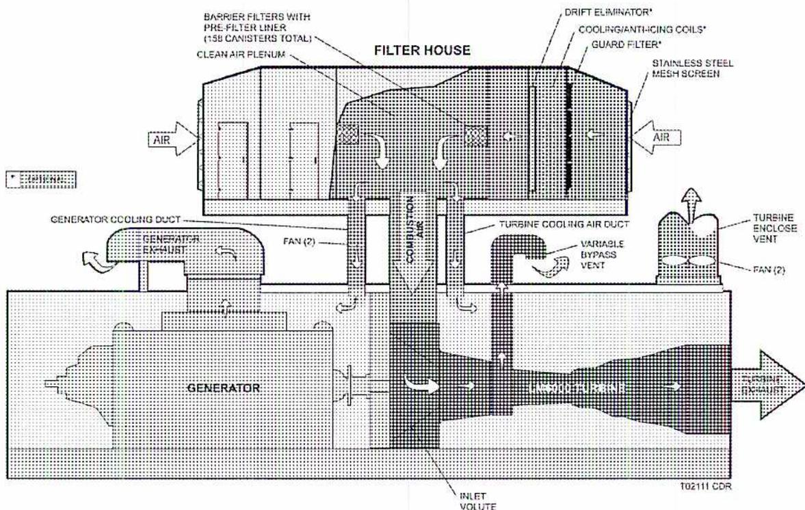
The diagram illustrates the air intake and exhaust system of a GE LM6000 gas turbine. Air enters from the left through a FILTER HOUSE containing BARRIER FILTERS WITH PRE-FILTER LINER (158 CANISTERS TOTAL) , a CLEAN AIR PLENUM , a GUARD FILTER* , COOLING/ANTI-ICING COILS* , a DRIFT ELIMINATOR* , and a STAINLESS STEEL MESH SCREEN . The air then passes through an INLET VOLUTE into the GENERATOR . A GENERATOR COOLING DUCT and GENERATOR EXHAUST are shown above the generator. Two FAN (2) units are located in the generator section. Combustion air is introduced from the top into the TURBINE . A VARIABLE BYPASS VENT and a TURBINE ENCLOSURE VENT with another FAN (2) unit are also present. The turbine exhausts to the right. A legend indicates that components marked with an asterisk (*) are optional. The diagram is labeled 102111 CDR.
Figure 37
Air Intake System (GE LM6000)
(Courtesy of GE Power Systems)
Some filter systems use inertial filtering which consists of a series of vanes that deflect the air and separate the contaminants using centrifugal force. A more effective approach is to use many small cylindrical filters, such as the ones shown in Fig. 38. Compressed air is used to backflow individual filters and to dislodge dust that has been collected and deposited into a hopper or other type of removal system.
These pulse cleaning systems are commonly called huff and puff and operate automatically based on pressure differential. They work well in both dusty and cold weather conditions.
Figure 38
Pulse Cleaning Filter
(Courtesy of Donaldson)
Inlet Cooling
Inlet cooling systems decrease intake air temperature, and thereby increase power output, as shown in Fig. 39. A 0.5% decrease in power can result from a 1°C temperature increase. In hot climates, this variation in power output can be significant and costly. They are based on the principle of evaporative cooling. When moisture evaporates, it requires a large amount of heat to overcome the latent heat of vaporization. The result is a drop in air temperature.
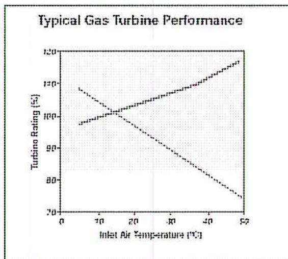
| Inlet Air Temperature (°C) | Turbine Rating (%) - Increasing Line | Turbine Rating (%) - Decreasing Line |
|---|---|---|
| 0 | 98 | 118 |
| 10 | 102 | 112 |
| 20 | 106 | 106 |
| 30 | 110 | 100 |
| 40 | 114 | 94 |
| 50 | 118 | 78 |
Figure 39
Typical Gas Turbine Performance
Various inlet cooling methods are used:
- • Evaporative cooling
- • Fog cooling
- • Chillers
Evaporative Cooling
This system (Fig. 40) consists of a wetted media which is located downstream of the inlet air filter. This arrangement protects the wetted media from any airborne particles in the ambient air. Evaporative cooling enhances engine efficiency by increasing the density of the air. Increased air density raises the specific mass flow through the engine which improves the fuel efficiency and power output. This system operates as an air washer, thereby cleaning the air. Another advantage to this system is a reduction in the emissions of oxides of nitrogen.
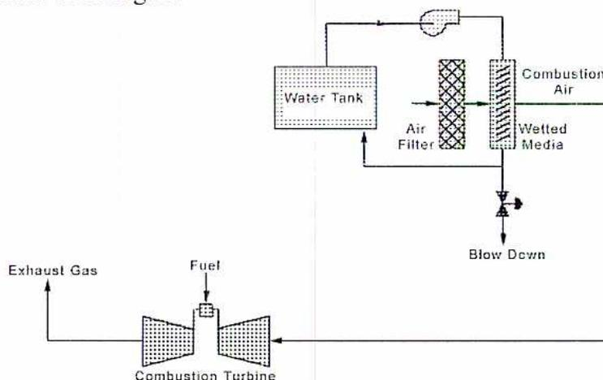
graph LR
WaterTank[Water Tank] --> AirFilter[Air Filter]
WaterTank --> WettedMedia[Wetted Media]
CombustionAir[Combustion Air] --> WettedMedia
WettedMedia --> AirFilter
AirFilter --> CombustionTurbine[Combustion Turbine]
Fuel --> CombustionTurbine
CombustionTurbine --> ExhaustGas[Exhaust Gas]
WettedMedia -- Blow Down --> BlowDown[Blow Down]
Figure 40
Evaporative Cooling
Fog Cooling
Atomized demineralized water under high pressure (7 000 to 20 000 kPa), is sprayed into an air stream (Fig. 41). Small fog droplets of approximately 10 microns ( \( \mu\text{m} \) ) diameter are desired as they have a faster evaporation rate. Fogging systems offer a very small pressure drop to the flow of inlet air to the gas turbine.
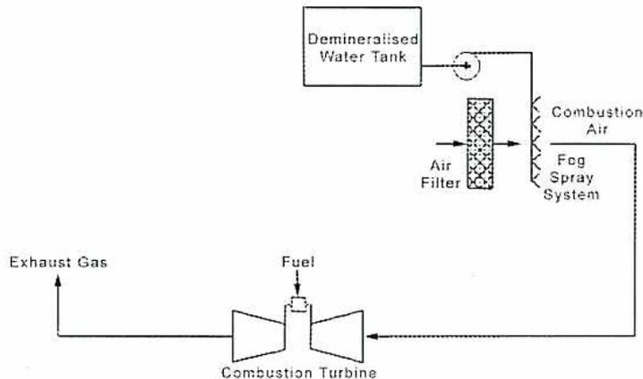
This schematic diagram illustrates a fog cooling system for a gas turbine. At the top, a 'Demineralised Water Tank' is connected to a 'Fog Spray System'. The 'Fog Spray System' is positioned to spray water into the 'Combustion Air' stream. The 'Combustion Air' stream passes through an 'Air Filter' before entering the 'Combustion Turbine'. 'Fuel' is introduced into the 'Combustion Turbine', and 'Exhaust Gas' is shown exiting from it.
Figure 41
Fog Inlet Air Cooling System
Chillers
Inlet air to the gas turbine is cooled by passing it through a finned coil of tubes (Fig. 42) which uses either \( \text{NH}_3 \) (Ammonia) or HFC-134a refrigerant as the cooling medium. The air temperature must not be less than \( 5^\circ\text{C} \) to prevent the formation of ice on the coils. Refrigeration will always provide the design inlet temperature regardless of the ambient conditions, unlike the evaporative systems which lose effectiveness in high humidity conditions.
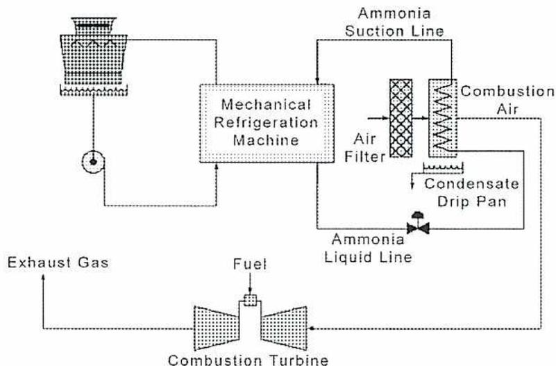
This schematic diagram shows a refrigeration air cooling system. A 'Mechanical Refrigeration Machine' is connected to a condenser at the top left and an evaporator coil in the center. The 'Mechanical Refrigeration Machine' is linked to an 'Ammonia Suction Line' and an 'Ammonia Liquid Line'. The 'Ammonia Liquid Line' passes through the evaporator coil, where 'Combustion Air' is cooled. The 'Combustion Air' stream passes through an 'Air Filter' before entering the 'Combustion Turbine'. 'Fuel' is introduced into the 'Combustion Turbine', and 'Exhaust Gas' is shown exiting from it. A 'Condensate Drip Pan' is located below the evaporator coil to collect condensed water.
Figure 42
Refrigeration Air Cooling System
Anti-Icing Systems
Ice can form in the air intake, or on the first few stages of the compressor, when low temperatures combine with humidity. If chunks of ice are drawn into the compressor, they can cause major damage, such as catastrophic destruction of the compressor section blading.
Various anti-icing systems are used:
- • Air is bled from the hot end of the compressor and injected into the front of the compressor through the nose cone and the first few stator vanes (see Fig. 43)
- • Heating coils are installed in the air intake
- • Heated air is fed from the exhaust (or another source) into the air intake
These systems are activated only when icing conditions are present because they reduce the efficiency and power output of the gas turbine.
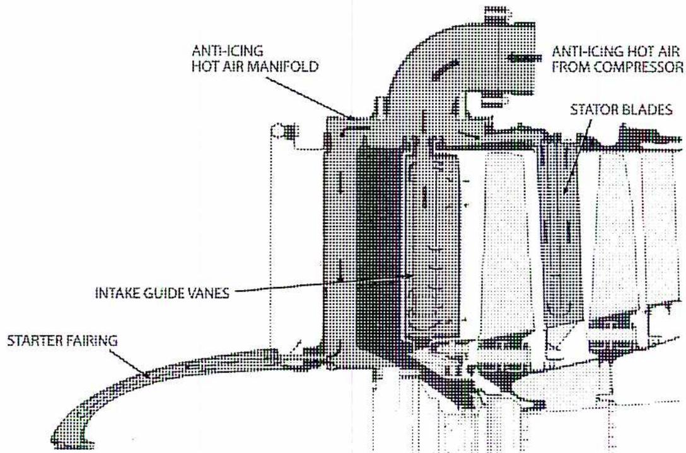
The diagram illustrates a cross-section of a gas turbine engine's intake and compressor section. Key components are labeled: 'STARTER FAIRING' at the bottom left, 'INTAKE GUIDE VANES' in the center, 'ANTI-ICING HOT AIR MANIFOLD' above the intake, and 'ANTI-ICING HOT AIR FROM COMPRESSOR' entering from the top right. 'STATOR BLADES' are shown in the compressor section. The diagram shows the flow of air and the placement of the anti-icing system components.
Figure 43
Rolls Royce Avon Anti-Icing System
(Courtesy of Rolls Royce)
EXHAUST SYSTEMS
The exhaust system directs the hot turbine exhaust, with as low a pressure loss as possible, to a location that is safe for employees and equipment. It has to be structurally sound and designed for high exhaust temperatures. Care should be taken to ensure that exhaust air does not re-circulate into the air intake since this will result in a loss of maximum power, unless this is part of an anti-icing system.
Noise attenuators and silencers are often added to the exhaust in accordance with local requirements.
Objective 8
Describe the design and operation of a gas turbine lubricating oil system.
INTRODUCTION
Most gas turbines have lube oil systems that lubricate the bearings supporting the rotor or rotors. Aero-derivative gas turbines use antifriction bearings which require small lube oil systems. Heavy-duty gas turbines use journal bearings which require larger lube oil systems. Microturbines are the exception; because of their small size, they are able to operate with air cooled bearings that do not require a lube oil system.
All lube oil systems perform the following basic functions:
- • Lubricate and/or separate the rotating surfaces from the stationary surfaces
- • Cool the bearings and other critical components
- • Assist in controlling radial and axial thrust
All lube oil systems include these basic components:
- • An oil reservoir to ensure an adequate supply of oil
- • Oil heaters in the reservoirs to maintain a certain start-up temperature and reduce the potential for moisture to collect in and contaminate the oil
- • Filters to ensure the oil is clean
- • Pumps to provide pressure
- • Coolers to ensure oil temperatures are kept within operating limits
- • Start-up permissives for oil pressure, oil temperature and oil flow rates
- • Protective, monitoring, and control devices (e.g. gauges and safety valves)
Gas turbine installations may have one or more lube oil system. These are the major configurations:
- • One integrated lube oil system that serves the gas turbine, power turbine, gearbox and driven equipment (compressor or generator), incorporated in heavy-duty gas turbines such as those manufactured by Solar Turbines.
- • Two lube oil systems: one for the gas turbine and power turbine, one for the load device. This design is also used in heavy-duty gas turbines.
- • Three separate lube oil systems: one for the engine, one for the power turbine, and one for the load. Used in some aero-derivative gas turbines.
Bearings
Gas turbines use two different types of bearings:
- • Antifriction (roller and/or ball) bearings - common in aero-derivative gas turbines that have lighter rotors
- • Radial (journal or tilt-pad) bearings - common in heavy-duty gas turbines that have heavier rotors
Fig. 44 shows an antifriction (roller) bearing for a Rolls Royce RB211. It features a separate oil squeeze film to dampen the bearing and increase its life. This engine also uses ball bearings (not shown) to counter and control thrust.
A cross-sectional diagram of a roller bearing assembly. At the top, a nozzle labeled 'Oil Feed' directs a stream of oil towards the bearing. The oil forms a 'Squeeze Oil Film' between the bearing's outer race and the housing. The 'Bearing Outer Race' is shown as a thick, dark ring. To the right, a label 'To Bearing Lubrication' points to a series of small circles representing oil droplets or a flow path. The bearing is mounted within a housing, and the inner ring is visible on the left, showing its connection to a shaft.
Figure 44
Rolls Royce RB211 Antifriction Bearing
(Courtesy of Rolls Royce)
The bearing configuration for the Rolls Royce RB211 is shown in Fig. 45. The two rotors shown require a more complicated arrangement using five bearings: two thrust (ball) bearings, and three roller bearings for the radial loads.
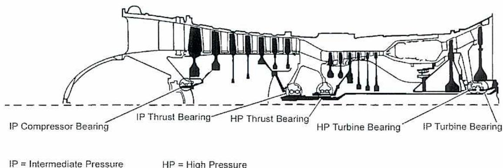
IP = Intermediate Pressure HP = High Pressure
Figure 45
Rolls Royce RB211 Bearing Configuration
(Courtesy of Rolls Royce)
Heavy-duty gas turbines require radial bearings which can take higher loads. Although standard journal bearings are used, tilt-pad bearings are more common. Fig. 46 shows a Solar bearing with five tilting pads on individual pivot pins.
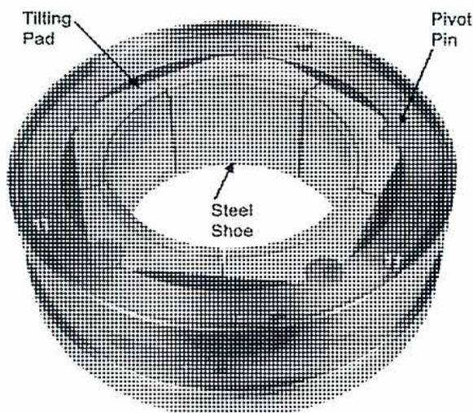
Figure 46
Radial Tilt-Pad Bearing
(Courtesy of Solar Turbines)
Fig. 47 shows a tilt-pad thrust bearing.
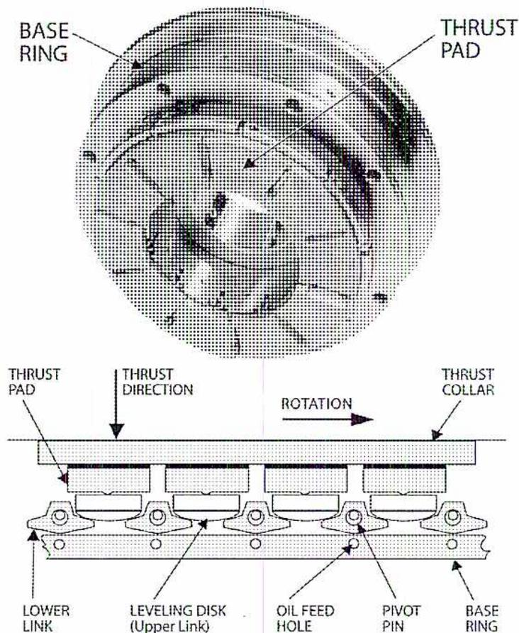
Figure 47
Tilt-Pad Thrust Bearing
(Courtesy of Solar Turbines)
On a dual-shaft heavy-duty gas turbine, thrust bearings are located on the front end of the compressor, at the back end of the compressor, before the gas turbine, and after the power turbine. Thrust bearings are positioned at the front end of the compressor and next to the power turbine bearings (one for each shaft).
AERO-DERIVATIVE GAS TURBINE LUBE OIL SYSTEM
Fig. 48 shows the lube oil system for an aero-derivative gas turbine — the General Electric LM6000 (used for power generation). It lubricates the gas turbine and power turbine bearings. The driven equipment is handled by a separate system.
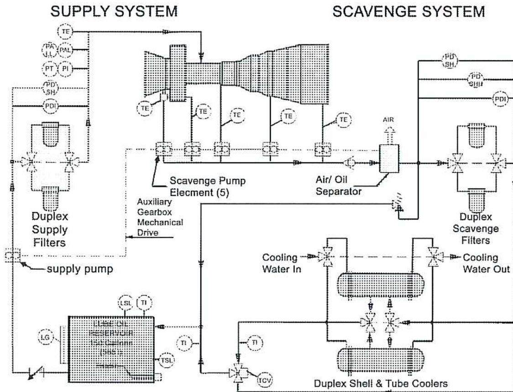
The diagram illustrates the lube oil system for the General Electric LM6000, organized into two primary sections: the SUPPLY SYSTEM on the left and the SCAVENGE SYSTEM on the right.
- Supply System: This section begins with a supply pump driven by an Auxiliary Gearbox Mechanical Drive . The oil is pumped through a Duplex Supply Filters unit. Various monitoring instruments are connected to the supply lines, including temperature elements ( TE ), pressure indicators ( PI ), pressure transmitters ( PT ), and differential pressure sensors ( PDI , PD SH ). The oil then enters the main engine components.
- Engine Components: The central part of the diagram shows the engine's internal components, including a compressor and turbine section. Multiple TE (temperature element) sensors are positioned throughout this section to monitor oil temperatures.
- Scavenge System: Oil is collected from the engine components and sent to an Air/Oil Separator , which vents AIR . The separated oil is then pumped by a Scavenge Pump Element (5) . The oil passes through a Duplex Scavenge Filters unit, monitored by PD SH and PDI sensors. It then flows through Duplex Shell & Tube Coolers , which are cooled by Cooling Water In and Cooling Water Out lines. A TCV (temperature control valve) is also shown in this section.
- Reservoir: The cooled oil is returned to the LUBE OIL RESERVOIR (568L) . This tank is equipped with a low oil level sensor ( LSL ), a temperature indicator ( TI ), a low oil temperature sensor ( TSL ), and a level gauge ( LG ).
Figure 48
General Electric LM6000 Lube Oil System
(Courtesy of GE Power Systems)
This lube oil system is divided into two sections: a supply system and a scavenge system. To prevent corrosion, all piping, fittings, and the reservoir are Type 304 stainless steel. The lube oil used is synthetic type oil suitable for high temperatures.
The oil reservoir contains approximately 500L in a 568L tank. It is fitted with protective devices to guard against low oil level and low oil temperature. A thermostatically controlled heater in the lube oil tank reservoir ensures that a minimum oil temperature is maintained to reduce the stresses on the turbine on startup and to keep moisture from condensing in the reservoir and contaminating the oil.
An electric motor driven auxiliary lube oil pump is used to initially pressurize the system and satisfy the permissives to allow the turbine to start.
A positive displacement pump, driven by an auxiliary gearbox on the engine, provides the required pressure to the bearings. After it leaves the pump, the oil is filtered through a duplex full-flow filter.
The oil supply is protected by switches for:
- • High oil temperature
- • Low oil pressure
- • High filter differential pressure
Then, the oil flows through the bearings and accumulates in the bearing sumps. The oil temperature is measured at each scavenge line in case of bearing problems.
Chip detectors are often located in the sumps to detect metal particles. If a bearing becomes damaged, metal particles break away and become entrained in the oil. Chip detectors are basically magnets that attract metal particles and detect when they accumulate. When the chip detector alarms, the detector will be removed and the particles that have been captured by the detector will be analyzed. The quantity and type of material collected will indicate:
- • Where the problem is
- • How severe the problem has become
Scavenge pumps (also driven by the auxiliary gearbox) provide pressure to flow the oil from the bearing sumps through another set of filters, and then through duplex thermostatically controlled water-cooled coolers. Then, the oil flows back into the reservoir.
HEAVY-DUTY GAS TURBINE LUBE OIL SYSTEM
Fig. 49 shows the lube oil system for a heavy-duty gas turbine with a single integrated oil system serving the gas turbine, gearbox, and driven equipment.
The oil reservoir is much larger than aero-derivative gas turbine lube oil reservoirs. It normally contains mineral oil, which does not have as high a temperature range as synthetic oil, but is more cost-effective. Oil temperatures are not as high in heavy-duty gas turbines since the oil flow is greater. If necessary, equipment may be installed to heat the oil supply.
During normal operation, oil pressure is supplied by a main lube oil pump which is driven from an accessory drive mounted on the front of the compressor shaft. Prior to startup and on shutdown, oil pressure is supplied by an AC-driven pre/post lube oil pump. This pump runs for a period of time after shutdown to cool and lubricate the bearings and prevent damage. In case of power loss or pre/post lube oil pump failure, a third pump — using another source of energy, for example, a DC pump driven from batteries — is available as backup.
The cooled oil is cleaned by duplex filters that can be replaced during operation. Duplex filter systems consist of two filters in parallel to allow one to be serviced while the other is on line. It is monitored by a differential pressure alarm and pressure gauge. At the lube oil header, protection systems guard against high oil temperature and low oil pressure.
After leaving the bearings, the oil drains back into the oil reservoir using gravity. Oil temperature is usually measured in the drains to monitor bearing condition.
A hydraulic pump is sometimes installed after the main lube oil pump to supply high pressure oil to control the variable inlet and stator vanes, the fuel control valve, and bleed valves.
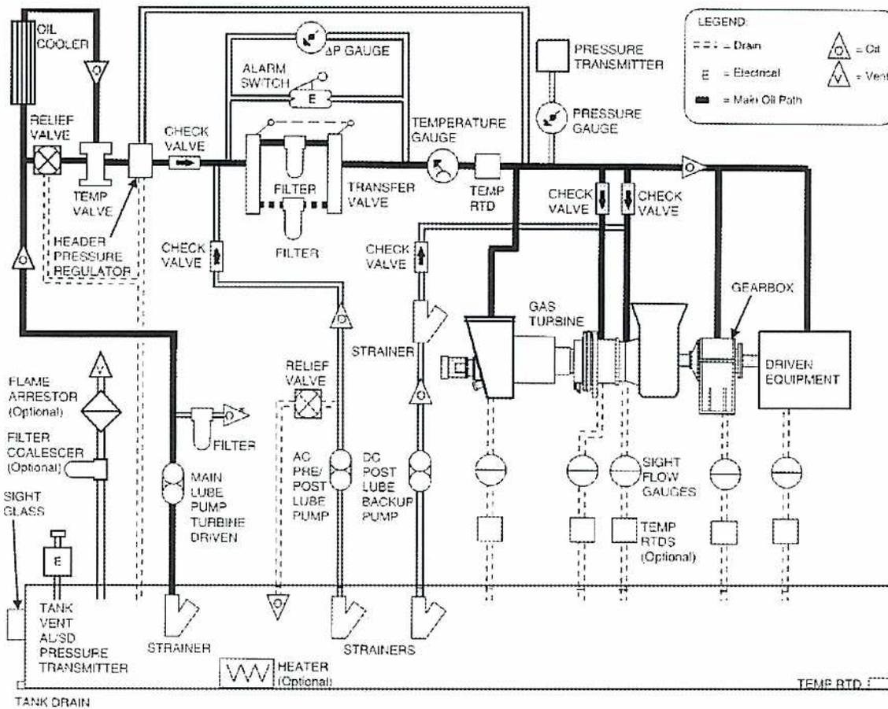
The diagram illustrates a complex lube oil system. At the bottom, an oil reservoir tank is shown with a vent/ALSD pressure transmitter, a sight glass, and a tank drain. The main oil path (solid line) starts from the tank, passes through a strainer, and is driven by a 'MAIN LUBE PUMP TURBINE DRIVEN'. The oil then flows through a series of components: a 'RELIEF VALVE', a 'TEMP VALVE', a 'HEADER PRESSURE REGULATOR', a 'CHECK VALVE', a 'FILTER', another 'CHECK VALVE', a 'TRANSFER VALVE', a 'TEMP RTD', a 'PRESSURE GAUGE', and a 'PRESSURE TRANSMITTER'. The oil then enters the 'GAS TURBINE' and 'GEARBOX' which are connected to 'DRIVEN EQUIPMENT'. Various monitoring and control components are integrated into the system, including 'OIL COOLER', 'ALARM SWITCH', 'AP GAUGE', 'TEMPERATURE GAUGE', 'FLAME ARRESTOR (Optional)', 'FILTER COALESCER (Optional)', 'AC PRE/POST LUBE PUMP', 'DC POST LUBE BACKUP PUMP', 'SIGHT FLOW GAUGES', 'TEMP RTDS (Optional)', and a 'HEATER (Optional)'. A legend in the top right corner defines the symbols: dashed line for 'Drain', triangle with a dot for 'Oil', 'E' for 'Electrical', triangle with a cross for 'Vent', and solid line for 'Main Oil Path'.
* To guide vane, bleed valve and fuel actuators
Figure 49
Lube Oil System for a Solar Gas Turbine
(Courtesy of Solar Turbines)
Objective 9
Describe the design and operation of a gas turbine fuel system.
NATURAL GAS FUEL
Natural gas is the best fuel for gas turbines since it:
- • Promotes the most efficient combustion
- • Produces the lowest environmental emissions
- • Delivers the longest engine life
It has to operate within a specified range of heating values and be free of liquid contaminants and sulphur compounds. The pressure of the turbine fuel gas system is usually much lower than the supply pipeline operating pressure. When the pressure is reduced across a throttling valve, the gas temperature will drop due to the natural refrigerating effect. This will tend to allow the heavier constituents in the gas to condense. For this reason, line heaters are usually installed just downstream of the pressure reducing valves to increase the gas temperature above the dew point of the heavier constituents in the gas.
If low energy fuel is used, special fuel nozzles and combustors must be installed. As well, the fuel gas system has to be adapted to accommodate the higher flow rates required to deliver the same fuel energy.
FUEL GAS SYSTEM
The General Electric LM6000 fuel gas system, shown in Fig.50, is representative of most gas turbines.
A fuel gas compressor is installed in case extra compression is required to boost a low pressure fuel source. The pressure of the fuel gas has to be higher than the pressure of the compressed air delivered to the combustion section. A pressure regulator and relief valve is installed to ensure that the fuel gas supply is maintained at the correct pressure. Low and high pressure switches protect against over or under pressure conditions.
A fuel filter ensures that contaminants do not enter the fuel system. Some systems use heat exchangers to raise the fuel gas to its optimum temperature to ensure that:
- • Complete combustion occurs in the combustor
- • The gas always remains above the dew point temperatures of the heaviest constituents in the fuel gas
A fuel gas flow meter monitors fuel consumption, but is not used for fuel control. Fuel is metered and controlled by the fuel metering valve, one of the most important components of the fuel gas system. It is also an essential component of the startup and shutdown sequence. Fuel valves are normally electrically controlled with hydraulic actuation, but electrically actuated valves are becoming more common. The fuel metering valve ensures that the correct amount of fuel is provided according to the operating conditions. It precisely controls the flow of fuel to ensure that maximum turbine temperature is not exceeded. The rate at which the fuel valve is opened and closed is limited to prevent temperature increases that might damage the turbine. Additional shutoff valves are provided for emergency purposes.
![Schematic diagram of the General Electric LM6000 Fuel Gas System. The diagram shows the flow of fuel gas from the Fuel Gas Compressor through various components to the Fuel Gas Manifold and then to 30 Fuel Gas Nozzles. The components include a Duplex Filter Separator, Pressure Regulator, FSD Valve, Bypass Valve, Fuel Gas Scrubber, 100 mesh (149 micron) strainer, Fuel Gas Flow Meter, Primary Shut Off Valve, Fuel Metering Valve, and Secondary Shut Off Valve. Instrumentation includes PDH, PT, PSL, PS, PI, and TE sensors connected to the Unit Control Panel.](f4fdd410cdb84df81274da55721e56fb_img.jpg)
The diagram illustrates the fuel gas system for the General Electric LM6000. The fuel gas is supplied from a Fuel Gas Compressor. It passes through a Fuel Gas Scrubber, then a Bypass Valve, an FSD Valve, and a Pressure Regulator. The next component is a Duplex Filter Separator, which is connected to the unit control panel via a PDH (Pressure Differential High) sensor. The fuel gas then flows through a 100 mesh (149 micron) strainer, followed by a Fuel Gas Flow Meter. The flow meter is connected to the unit control panel via FT (Flow Transmitter) and TE (Temperature Element) sensors. The fuel gas then passes through a Primary Shut Off Valve, which is connected to the unit control panel via PT (Pressure Transmitter), PSL (Pressure Switch Low), PS (Pressure Switch), and PI (Pressure Indicator) sensors. A Vent line is also connected to the unit control panel. The fuel gas then passes through a Fuel Metering Valve, which is connected to the unit control panel via an E/M (Electro-Mechanical) converter. The fuel gas then passes through a Secondary Shut Off Valve, which is connected to the unit control panel via a PT (Pressure Transmitter) sensor. The fuel gas then flows to the Fuel Gas Manifold, which is connected to 30 Fuel Gas Nozzles.
Figure 50
General Electric LM6000 Fuel Gas System
(Courtesy of GE Power Systems)
LIQUID FUELS
Gas turbines can burn a wide range of liquid fuels including:
- • Distillates, such as kerosene, which do not require fuel treatment
- • Blended heavy distillates and low ash crudes which require some treatment
- • Residuals and heavy ash crudes which require considerable cleaning and treatment
Fuel quality affects gas turbine availability. As fuel quality decreases, maintenance actions and overhauls are needed more frequently and maintenance costs increase.
FUEL OIL SYSTEM
An example of a fuel oil system is shown in Fig. 51. The system starts with a fuel storage tank and fuel treatment.
Treatment varies with the type of fuel and may include centrifuges, filters, de-watering, and chemical treatment. Chemicals that are especially harmful to the turbine section are sodium, potassium, and vanadium since they cause rapid corrosion. Gas turbines burn mainly natural gas and light oil. Crude oil, residual, and some distillates contain corrosive components and as such require fuel treatment equipment. In addition, ash deposits from these fuels result in gas turbine deratings of up to 15 percent. However, they may still be economically attractive fuels, particularly in combined-cycle plants.
Sodium and potassium are removed from residual, crude and heavy distillates by a water washing procedure. A simpler and less expensive purification system will do the same job for light crude and light distillates. A magnesium additive system may also be needed to reduce the corrosive effects if vanadium is present. Fuels requiring such treatment must have a separate fuel-treatment plant and a system of accurate fuel monitoring to assure reliable, low-maintenance operation of gas turbines.
Then, the cleaned and treated oil is filtered and pumped to the gas turbine where it is filtered once more. Similar to fuel gas systems, there is a main metering valve with a primary and secondary shutoff valve. The liquid fuel must be supplied to the nozzles at a specific pressure to ensure proper and efficient atomization and combustion. To handle load changes the pressure controlled bypass valve directs the excess flow back to the storage tank to maintain a set operating pressure on the system. Drains are provided on the fuel manifolds.
The diagram illustrates the liquid fuel system for a General Electric LM6000 gas turbine. The system begins with a 'FUEL OIL STORAGE' tank on the right, which feeds a 'TRANSFER PUMP'. This pump draws fuel through a 'FLOATING SUCTION' line into a 'CLEAN OIL STORAGE' tank. From there, the fuel is pumped through a 'FILTER' and into a 'DUPLEX HIGH PRESSURE PUMP MODULE'. This module contains two parallel pump paths, each with its own pressure indicator (PI) and pressure transmitter (PT). The output of the pump module passes through a series of components: a 'DUPLEX FILTERS' unit, a 'FUEL OIL FLOWMETER', a 'PRIMARY SHUT OFF VALVE', a 'FUEL METERING VALVE', and another 'FUEL OIL FLOWMETER'. These components are connected to a 'To unit control panel' via various sensors including pressure indicators (PI), pressure differentials (PDI), pressure transmitters (PT), and temperature indicators (TE). The fuel then passes through a 'SECONDARY SHUT OFF VALVE' and a 'PRESSURIZING VALVE' before entering the 'Primary Liquid Fuel Manifold' and 'Secondary Liquid Fuel Manifold'. These manifolds supply '30 Liquid Fuel Nozzles'. Excess fuel from the nozzles is directed 'TO DRAIN' through a return line labeled 'Liquid Fuel Return'.
Figure 51
Liquid Fuel System (General Electric LM6000)
(Courtesy of GE Power Systems)
Protective instrumentation is installed on the fuel gas system to monitor, control, alarm and/or completely shutdown the unit for specific conditions of pressure, temperature and flow rates.
Dual Fuel Systems
Some gas turbines have dual fuel capability so that the operator can switch to a less expensive fuel, or use the alternative fuel as a backup. An example of a dual fuel system (gas and liquid), shown in Fig. 52, requires a special fuel nozzle. The control system design is more complex to manage the two types of fuels and to accommodate the switchover between them. Some systems can burn a mixture of gaseous and liquid fuels simultaneously.
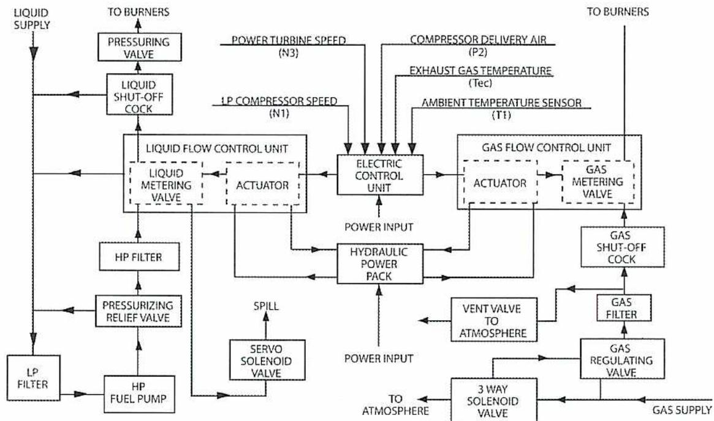
The diagram illustrates the Dual Fuel System (Rolls Royce Avon) architecture. It is divided into two main fuel supply paths: Liquid and Gas.
-
Liquid Fuel Path:
- Starts at LIQUID SUPPLY .
- Passes through an LP FILTER .
- Then through an HP FUEL PUMP .
- From the pump, the path splits: one branch goes through a PRESSURIZING RELIEF VALVE to an HP FILTER , and another branch goes to a SERVO SOLENOID VALVE which leads to SPILL .
- From the HP FILTER , the fuel goes through a PRESSURIZING VALVE and a LIQUID SHUT-OFF COCK to TO BURNERS .
- There is also a bypass line from the LIQUID SUPPLY that goes directly to the LIQUID FLOW CONTROL UNIT .
-
Gas Fuel Path:
- Starts at GAS SUPPLY .
- Passes through a GAS REGULATING VALVE .
- Then through a 3 WAY SOLENOID VALVE which can divert flow TO ATMOSPHERE or to the GAS FILTER .
- From the GAS FILTER , the fuel goes through a GAS SHUT-OFF COCK to TO BURNERS .
- A VENT VALVE TO ATMOSPHERE is connected to the line between the 3 WAY SOLENOID VALVE and the GAS FILTER .
-
Control Systems:
- The LIQUID FLOW CONTROL UNIT (containing a LIQUID METERING VALVE and an ACTUATOR ) receives inputs from LP COMPRESSOR SPEED (N1) and POWER TURBINE SPEED (N3) . It is controlled by an ELECTRIC CONTROL UNIT and a HYDRAULIC POWER PACK .
- The GAS FLOW CONTROL UNIT (containing a GAS METERING VALVE and an ACTUATOR ) receives inputs from COMPRESSOR DELIVERY AIR (P2) , EXHAUST GAS TEMPERATURE (Tec) , and AMBIENT TEMPERATURE SENSOR (Tt1) . It is also controlled by the ELECTRIC CONTROL UNIT and the HYDRAULIC POWER PACK .
- The ELECTRIC CONTROL UNIT receives POWER INPUT and sends control signals to the LIQUID FLOW CONTROL UNIT , GAS FLOW CONTROL UNIT , and SERVO SOLENOID VALVE .
- The HYDRAULIC POWER PACK receives POWER INPUT and provides hydraulic power to the actuators in both flow control units.
Figure 52
Dual Fuel System (Rolls Royce Avon)
(Courtesy of Rolls Royce)
Objective 10
Describe the design and operation of a gas turbine steam or water injection system and a dry low NO x system.
INTRODUCTION
Gas turbines are required to produce low levels of emissions since the levels and types of emission are legislated and enforced in many areas. These increasingly stringent requirements have resulted in major changes to gas turbine design, particularly the combustion section.
Gas turbine emissions are summarized in Table 1. They are divided into two groups, major species, and minor species. Major species are measured in percent (%), while minor species are measured in parts per million (ppm). The specific pollutants produced depend on the operating conditions of the gas turbine, especially the combustion characteristics, and the type of fuel used.
Table 1
Gas Turbine Emissions
(Courtesy of GE Power Systems)
| Major Species |
Typical Concentration
(% Volume) |
Source |
|---|---|---|
| Nitrogen (N 2 ) | 66 - 72 | Inlet Air |
| Oxygen (O 2 ) | 12 - 18 | Inlet Air |
| Carbon Dioxide (CO 2 ) | 1 - 5 | Oxidation of Fuel Carbon |
| Water Vapor (H 2 O) | 1 - 5 | Oxidation of Fuel Hydrogen |
| Minor Species Pollutants |
Typical Concentration
(PPMV) |
Source |
| Nitric Oxide (NO) | 20 - 220 | Oxidation of Atmosphere Nitrogen |
| Nitrogen Dioxide (NO 2 ) | 2 - 20 | Oxidation of Fuel-Bound Organic Nitrogen |
| Carbon Monoxide (CO) | 5 - 330 | Incomplete Oxidation of Fuel Carbon |
| Sulfur Dioxide (SO 2 ) | Trace - 100 | Oxidation of Fuel-Bound Organic Sulfur |
| Sulfur Trioxide (SO 3 ) | Trace - 4 | Oxidation of Fuel-Bound Organic Sulfur |
| Unburned Hydrocarbons (UHC) | 5 - 300 | Incomplete Oxidation of Fuel or Intermediates |
| Particulate Matter Smoke | Trace - 25 | Inlet Ingestion, Fuel Ash, Hot-Gas-Path |
| Attrition, Incomplete Oxidation of Fuel or Intermediates |
The focus of emission control efforts has been sulphur dioxides (SO x ) and nitrogen oxides (NO x ). Sulphur dioxides are formed from the burning of fossil fuels.
Nitrogen oxides are formed from the:
- • Oxidation of free nitrogen already in the air by the high temperature of combustion
- • Partial combustion of fossil fuels
In general, the formation of NO x can be managed by reducing flame temperature. The four methods of NO x control are:
- • Water injection
- • Dry low NO x emission combustor design
- • Catalytic reduction
- • Lean pre-mixed combustion
WATER INJECTION SYSTEMS
The earliest methods to reduce NO x emissions involved the injection of water or steam into the combustor. This approach has been applied mainly to heavy-duty gas turbines and less frequently to aero-derivative gas turbines. Water or steam injection can reduce NO x levels to 25 ppm v (parts per million per volume) for natural gas fuels from normal levels of 150 - 200 ppm v without emission control.
Water is also used to reduce NO x emissions from oil-fired combustion systems. It is mixed with the oil before being sprayed into the burner. Water decreases the combustion temperature and can reduce NO x emissions from burning light weight oils by as much as 15%. A significant added advantage in using these emulsions is that they reduce the emission of particulate matter. When water is mixed in the oil, each oil droplet sprayed into the firebox has several tiny water droplets inside. The heat existing in the firebox makes these water droplets flash into steam and explode the oil droplet. Increasing the surface area of the oil enables it to burn faster and more completely. A reduction in particulate emissions can be achieved regardless of whether light or heavy oils are being burned.
Emissions are reduced by introducing a heat sink to limit flame temperature. An additional benefit is that power output is increased due to an increase in the mass flow. Water is more effective than steam, not only because it is at a lower temperature, but also due to the latent heat of vaporization. In fact, about 1.6 times the amount of steam is required to produce the same effect.
The major limitation is that the quality of the water must be very high, similar to boiler feed water, to reduce deposits and corrosion in the downstream hot gas path components. Since a substantial amount of water is required, this method is not suitable for many situations.
Water is injected directly into the combustor by one of two methods:
- • Water injection fuel nozzle
- • Breech-load fuel nozzle
Water Injection Fuel Nozzle
Water is injected using water spray nozzles (Fig. 53) installed close to each fuel injector. Water injection systems require a water pump and filters, flow meters, water stop, and flow control valves, in addition to a more complicated control system. Steam injection systems require a steam flow meter, steam control valve, steam stop valve, and steam blowdown valves.
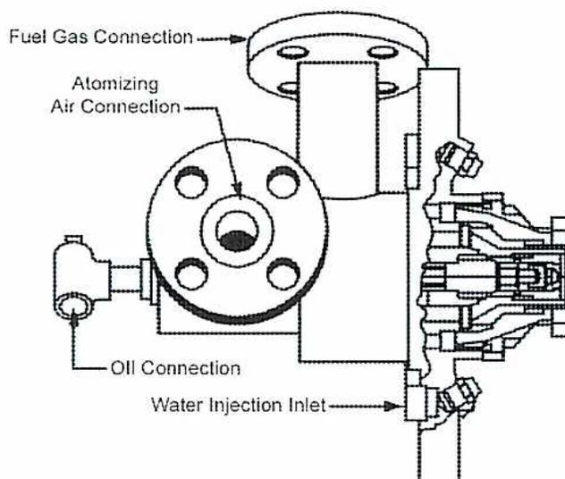
The diagram shows a cross-sectional view of a fuel nozzle assembly. At the top, a flange is labeled 'Fuel Gas Connection'. Below it, another flange has four small holes and a central opening, labeled 'Atomizing Air Connection'. On the left side, a pipe is labeled 'Oil Connection'. At the bottom, an inlet is labeled 'Water Injection Inlet'. The internal structure of the nozzle is shown in detail, including various internal passages and a complex internal assembly at the bottom right.
Figure 53
Water Injection Fuel Nozzle
(Courtesy of GE Power Systems)
Breech-Load Fuel Nozzle
Fig. 54 shows a breech-load fuel nozzle where the water is injected in one spot upstream of the combustors to allow for premixing with the fuel before combustion.
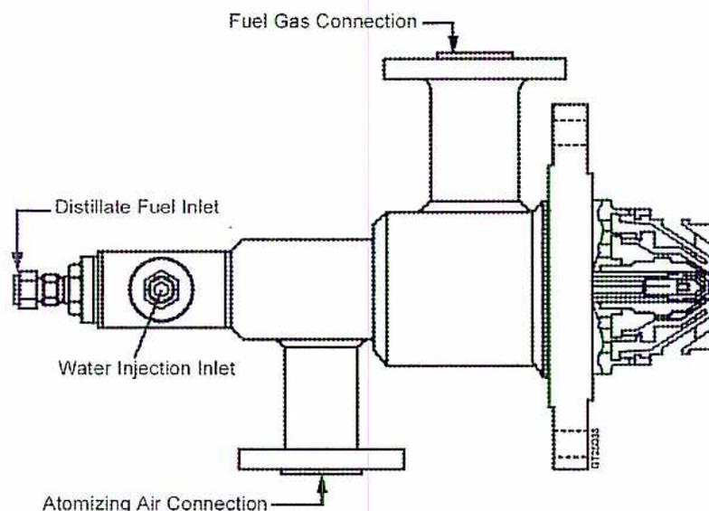
A technical diagram of a breech-load fuel nozzle. The nozzle is shown in a cross-sectional view, revealing its internal components. On the left side, there are three inlets: a 'Distillate Fuel Inlet' at the top, a 'Water Injection Inlet' in the middle, and an 'Atomizing Air Connection' at the bottom. The nozzle body is connected to a 'Fuel Gas Connection' at the top. The internal structure shows a complex arrangement of passages and a nozzle tip on the right side.
Figure 54
Breech-load Fuel Nozzle
(Courtesy of GE Power Systems)
DRY LOW NO x EMISSION COMBUSTOR DESIGN
Development started in the 1970's to produce an emission control system that did not use water or steam and could also achieve lower emission levels. This method is usually known as either dry low NO x (DLN) or dry low emission (DLE) depending on the manufacturer. Levels, as low as 7ppm v , are now being achieved in large industrial gas turbines.
Dry emission systems are based on the fact that emission of NO x is drastically reduced if the air-fuel mixture is lean or less than stoichiometric (the correct proportion of air to fuel required to achieve total combustion). The disadvantage with lean mixtures is that combustion becomes unstable, especially at part load.
Various designs have been developed to provide stable operation, some of which use a series of staged fuel nozzles. An example of this design, used in heavy-duty gas turbines, is shown in Fig. 55. It features two sets of fuel nozzles:
- • Primary fuel nozzle for startup and part load operation
- • Secondary nozzle for lean operation and lowest emissions at full load
A schematic diagram of a Dry Low NOx Combustor. The diagram shows a cross-section of the combustor housing, which includes an Outer Casing, a Flow Sleeve, and an End Cover. Inside, there is a Centerbody and a Venturi. The combustion chamber is divided into three main zones: a Primary Zone, a Secondary Zone, and a Dilution Zone. Fuel is introduced through Primary Fuel Nozzles and a Secondary Fuel Nozzle. The Primary Zone is further divided into a Lean and Premixing Primary Zone.
Figure 55
Dry Low NOx Combustor
(Courtesy of GE Power Systems)
The staging of these nozzles is shown in Fig. 56.
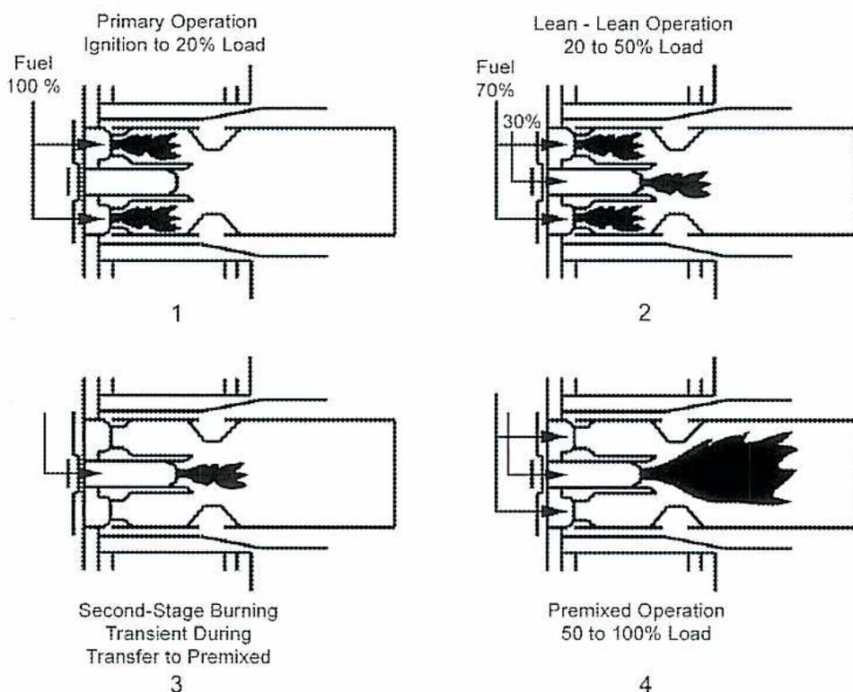
A diagram illustrating four operating modes of the fuel-staged Dry Low NOx combustor. Each mode is shown in a cross-sectional view of the combustor with fuel flow indicated by arrows and percentages.
- 1 Primary Operation Ignition to 20% Load: Fuel is 100% and is directed to the primary fuel nozzles. The flame is shown in the primary zone.
- 2 Lean - Lean Operation 20 to 50% Load: Fuel is 70% and is directed to the primary fuel nozzles. A portion (30%) is also directed to the secondary fuel nozzle. The flame is shown in the primary zone.
- 3 Second-Stage Burning Transient During Transfer to Premixed: Fuel is 100% and is directed to the primary fuel nozzles. The flame is shown in the primary zone, with a smaller flame visible in the secondary zone.
- 4 Premixed Operation 50 to 100% Load: Fuel is 100% and is directed to the secondary fuel nozzle. The flame is shown in the secondary zone.
Figure 56
Fuel-Staged Dry Low NOx Operating Modes
(Courtesy of GE Power Systems)
CATALYTIC REDUCTION
NO x emissions are removed from the burner exhaust gases through the use of a catalyst. In one process, ammonia is added to the flue gas prior to the gas passing over a catalyst. The catalyst enables the ammonia to react chemically with the NO x converting it to molecular nitrogen and water. The catalyst used is a combination of titanium and vanadium oxides. This system promotes the removal of up to 90% of nitrogen oxides from the flue gases.
The ammonia reacts with both the nitrogen monoxide (NO) and nitrogen dioxide (NO 2 )
Reaction with NO:
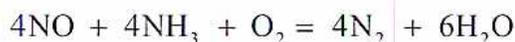
Reaction with NO 2 :
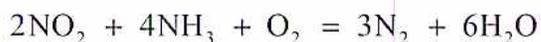
The NO and NO 2 react with the ammonia to form nitrogen and water. The nitrogen is harmless and can be released back into the atmosphere.
In a second process, both NO x and SO x are removed. The combustion gases are passed across a bed of copper oxide, which reacts with the sulphur oxide to form copper sulphate. The copper sulphate acts as a catalyst for reducing NO x to ammonia. Approximately 90% of the NO x and SO x can be removed from the flue gases through this process.
LEAN PRE-MIXED COMBUSTION
Another method of reducing the formation of NO x is to reduce the flame temperature by thoroughly premixing the fuel with large quantities of air prior to combustion. Referring to Fig. 57, in a conventional gas turbine combustor, 30% of the total air flow is mixed with the fuel supply to the burner. The remaining 70% of the required air flow is added at later stages to the burner. This results in a burner temperature of approximately 2260°C.
With the Solar Turbine SoLoNOx® type of burner, 60% of the total air flow is mixed with the fuel supply to the burner. The remaining 40% is added at later stages. This results in a burner temperature of 1590°C. This lean-premixed combustion technology ensures a uniform air/fuel mixture and prevention of the formation of NO x .
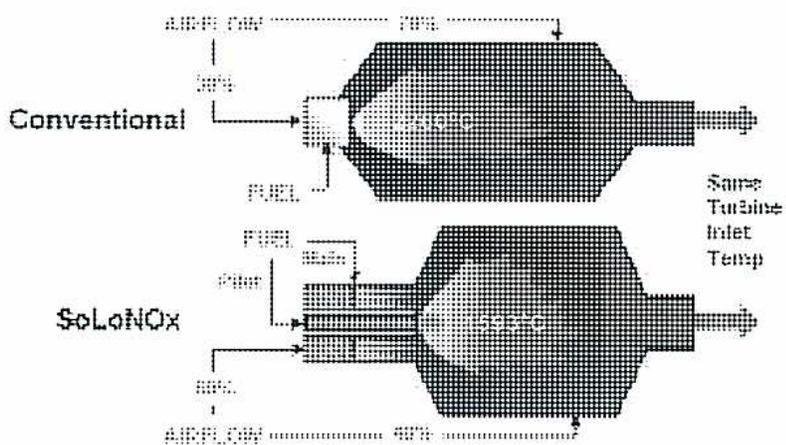
The diagram compares two combustion chamber designs.
1.
Conventional:
Shows a single fuel injector at the front of a combustion chamber. Airflow enters from the top and bottom (labeled 70% and 30% respectively). The combustion zone is labeled '2500°F+'.
2.
SoLoNOx:
Shows a lean pre-mixed design with multiple fuel injectors (labeled 'FUEL' and 'PILOT') and a more complex air intake system. Airflow is distributed differently (labeled 60% and 40%). The combustion zone is labeled '2500°F'.
Both designs lead to an exhaust labeled 'Same Turbine Inlet Temp'.
Figure 57
Lean Pre-Mixed Combustion Design
(Courtesy of Solar Turbines)
Chapter Questions
B1.7
- 1. What factors influence the selection of the type of gas turbine engine for a specific application?
- 2. With the aid of a simple sketch, describe the gas turbine thermodynamic cycle.
- 3. Explain the advantages of a fired HRSG system over an unfired unit
- 4. Explain the advantages for using intercooling to improve the efficiency of the basic gas turbine cycle.
- 5. Using simple sketches, describe the hot end and cold end drives that are used in multi-shaft arrangements for gas turbines.
-
6. Give a brief explanation of the following types of combustors that are used for gas turbines:
- a) Annular
- b) Can-annular
- 7. With the aid of a simple sketch, describe how a refrigeration chiller is used to increase the power output of a gas turbine.
-
8.
- a) Using a simple sketch, describe an aero-derivative gas turbine lube oil system.
- b) Discuss the use of chip detectors to detect metal particles in the oil.
- 9. Explain, with the aid of a simple sketch, a type of fuel gas system for a gas turbine.
- 10. With the use of simple equations, describe how ammonia is used in the catalytic reduction of NO x emissions from the exhaust gases of a gas turbine.